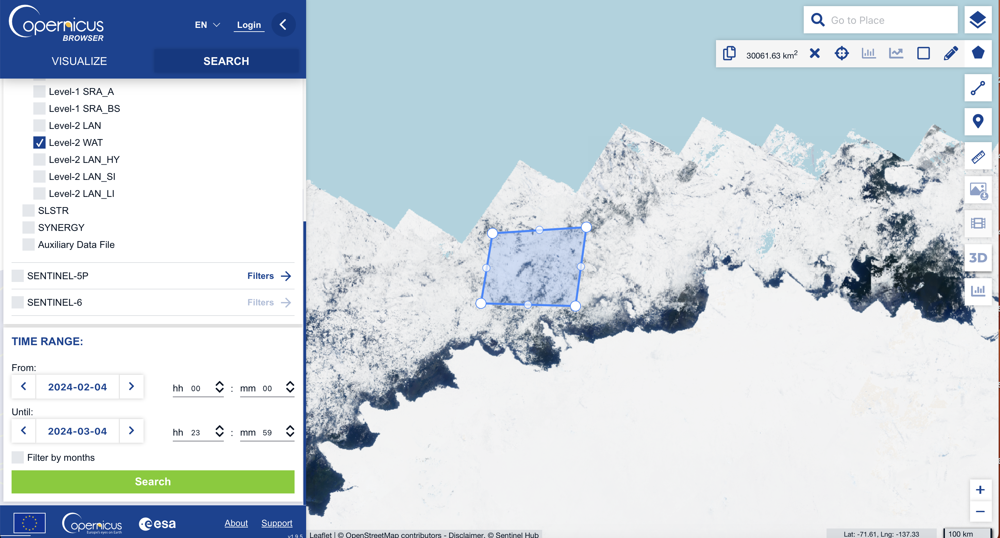

Interpolation of Sea Level Anomaly using GPSat#
Week 8 contents can be accessed here.
from google.colab import drive
drive.mount('/content/drive')
Mounted at /content/drive
Fetching data#
In week 4, we’ve introduced the method to fetch different types of data from the Google Earth Engine and Copernicus Dataspace. The data we are going to use in this week’s content is teh altimetry data. Therefore, we will use Copernicus Dataspace API instead of Google Earth Engine. Let’s fetch this data and recall some of the procedures.
!pip install cartopy
Collecting cartopy
Downloading Cartopy-0.22.0-cp310-cp310-manylinux_2_17_x86_64.manylinux2014_x86_64.whl (11.8 MB)
━━━━━━━━━━━━━━━━━━━━━━━━━━━━━━━━━━━━━━━━ 11.8/11.8 MB 38.3 MB/s eta 0:00:00
?25hRequirement already satisfied: numpy>=1.21 in /usr/local/lib/python3.10/dist-packages (from cartopy) (1.25.2)
Requirement already satisfied: matplotlib>=3.4 in /usr/local/lib/python3.10/dist-packages (from cartopy) (3.7.1)
Requirement already satisfied: shapely>=1.7 in /usr/local/lib/python3.10/dist-packages (from cartopy) (2.0.3)
Requirement already satisfied: packaging>=20 in /usr/local/lib/python3.10/dist-packages (from cartopy) (23.2)
Requirement already satisfied: pyshp>=2.1 in /usr/local/lib/python3.10/dist-packages (from cartopy) (2.3.1)
Requirement already satisfied: pyproj>=3.1.0 in /usr/local/lib/python3.10/dist-packages (from cartopy) (3.6.1)
Requirement already satisfied: contourpy>=1.0.1 in /usr/local/lib/python3.10/dist-packages (from matplotlib>=3.4->cartopy) (1.2.0)
Requirement already satisfied: cycler>=0.10 in /usr/local/lib/python3.10/dist-packages (from matplotlib>=3.4->cartopy) (0.12.1)
Requirement already satisfied: fonttools>=4.22.0 in /usr/local/lib/python3.10/dist-packages (from matplotlib>=3.4->cartopy) (4.49.0)
Requirement already satisfied: kiwisolver>=1.0.1 in /usr/local/lib/python3.10/dist-packages (from matplotlib>=3.4->cartopy) (1.4.5)
Requirement already satisfied: pillow>=6.2.0 in /usr/local/lib/python3.10/dist-packages (from matplotlib>=3.4->cartopy) (9.4.0)
Requirement already satisfied: pyparsing>=2.3.1 in /usr/local/lib/python3.10/dist-packages (from matplotlib>=3.4->cartopy) (3.1.1)
Requirement already satisfied: python-dateutil>=2.7 in /usr/local/lib/python3.10/dist-packages (from matplotlib>=3.4->cartopy) (2.8.2)
Requirement already satisfied: certifi in /usr/local/lib/python3.10/dist-packages (from pyproj>=3.1.0->cartopy) (2024.2.2)
Requirement already satisfied: six>=1.5 in /usr/local/lib/python3.10/dist-packages (from python-dateutil>=2.7->matplotlib>=3.4->cartopy) (1.16.0)
Installing collected packages: cartopy
Successfully installed cartopy-0.22.0
import requests
import pandas as pd
import subprocess
import os
import time
import shutil
import json
from datetime import date
from joblib import Parallel, delayed
import zipfile
import sys
import glob
import numpy as np
def get_access_token(username, password):
"""
Obtain an access token to the Copernicus Data Space Ecosystem.
Necessary for the download of hosted products.
"""
p = subprocess.run(f"curl --location --request POST 'https://identity.dataspace.copernicus.eu/auth/realms/CDSE/protocol/openid-connect/token' \
--header 'Content-Type: application/x-www-form-urlencoded' \
--data-urlencode 'grant_type=password' \
--data-urlencode 'username={username}' \
--data-urlencode 'password={password}' \
--data-urlencode 'client_id=cdse-public'", shell=True,capture_output=True, text=True)
access_dict = json.loads(p.stdout)
return access_dict['access_token'], access_dict['refresh_token']
#=============================================================================================================================================================#
def get_new_access_token(refresh_token):
"""
Obtain a new access token to the Copernicus Data Space Ecosystem using a previously provided refesh token.
"""
p = subprocess.run(f"curl --location --request POST 'https://identity.dataspace.copernicus.eu/auth/realms/CDSE/protocol/openid-connect/token' \
--header 'Content-Type: application/x-www-form-urlencoded' \
--data-urlencode 'grant_type=refresh_token' \
--data-urlencode 'refresh_token={refresh_token}' \
--data-urlencode 'client_id=cdse-public'", shell=True,capture_output=True, text=True)
access_dict = json.loads(p.stdout)
return access_dict['access_token'], access_dict['refresh_token']
#=============================================================================================================================================================#
def get_S3_products_by_names(names):
"""
Obtain a pandas dataframe of Sentinel products for a given list of product names.
"""
all_results = []
base_url = "https://catalogue.dataspace.copernicus.eu/odata/v1/Products?$filter="
for name in names:
query_url = f"{base_url}Name eq '{name}'&$top=1000"
response = requests.get(query_url)
json_response = response.json()
if 'value' in json_response:
all_results.extend(json_response['value'])
results_df = pd.DataFrame.from_dict(all_results)
if not results_df.empty:
results_df['Satellite'] = [row['Name'][:3] for i, row in results_df.iterrows()]
results_df['SensingStart'] = [pd.to_datetime(row['ContentDate']['Start']) for i, row in results_df.iterrows()]
results_df['SensingEnd'] = [pd.to_datetime(row['ContentDate']['End']) for i, row in results_df.iterrows()]
results_df = results_df.sort_values(by='SensingStart')
return results_df
def download_single_product(product_id, file_name, access_token, download_dir="downloaded_products"):
"""
Download a single product from the Copernicus Data Space.
:param product_id: The unique identifier for the product.
:param file_name: The name of the file to be downloaded.
:param access_token: The access token for authorization.
:param download_dir: The directory where the product will be saved.
"""
# Ensure the download directory exists
os.makedirs(download_dir, exist_ok=True)
# Construct the download URL
url = f"https://zipper.dataspace.copernicus.eu/odata/v1/Products({product_id})/$value"
# Set up the session and headers
headers = {"Authorization": f"Bearer {access_token}"}
session = requests.Session()
session.headers.update(headers)
# Perform the request
response = session.get(url, headers=headers, stream=True)
# Check if the request was successful
if response.status_code == 200:
# Define the path for the output file
output_file_path = os.path.join(download_dir, file_name + ".zip")
# Stream the content to a file
with open(output_file_path, "wb") as file:
for chunk in response.iter_content(chunk_size=8192):
if chunk:
file.write(chunk)
print(f"Downloaded: {output_file_path}")
else:
print(f"Failed to download product {product_id}. Status Code: {response.status_code}")
cop_dspace_usrnm = '' # amend with your copernicus dataspace username
cop_dspace_psswrd = ''# amend with your copernicus dataspace password
token, refresh_token = get_access_token(cop_dspace_usrnm, cop_dspace_psswrd)
product_names = [
"S3A_SR_2_WAT____20230101T185252_20230101T185651_20230101T203101_0239_094_027______MAR_O_NR_005.SEN3",
"S3A_SR_2_WAT____20230101T121709_20230101T122349_20230101T135934_0400_094_023______MAR_O_NR_005.SEN3",
"S3A_SR_2_WAT____20230102T182657_20230102T183045_20230102T200425_0228_094_041______MAR_O_NR_005.SEN3",
"S3A_SR_2_WAT____20230102T115112_20230102T115751_20230102T132929_0399_094_037______MAR_O_NR_005.SEN3",
"S3A_SR_2_WAT____20230105T121326_20230105T122007_20230105T134843_0401_094_080______MAR_O_NR_005.SEN3",
"S3A_SR_2_WAT____20230105T184910_20230105T185308_20230105T202752_0238_094_084______MAR_O_NR_005.SEN3",
"S3A_SR_2_WAT____20230106T182316_20230106T182702_20230106T200253_0226_094_098______MAR_O_NR_005.SEN3",
"S3A_SR_2_WAT____20230109T120945_20230109T121625_20230109T135020_0400_094_137______MAR_O_NR_005.SEN3",
"S3B_SR_2_WAT____20230103T122643_20230103T123314_20230103T140329_0391_074_294______MAR_O_NR_005.SEN3",
"S3B_SR_2_WAT____20230104T183621_20230104T184014_20230104T201141_0233_074_312______MAR_O_NR_005.SEN3",
"S3B_SR_2_WAT____20230107T122257_20230107T122931_20230107T135514_0394_074_351______MAR_O_NR_005.SEN3",
"S3B_SR_2_WAT____20230107T185833_20230107T190234_20230107T203555_0240_074_355______MAR_O_NR_005.SEN3",
"S3B_SR_2_WAT____20230108T183238_20230108T183630_20230108T200807_0232_074_369______MAR_O_NR_005.SEN3",
"S3B_SR_2_WAT____20230108T115654_20230108T120333_20230108T133905_0399_074_365______MAR_O_NR_005.SEN3",
"S3B_SR_2_WAT____20230111T185450_20230111T185850_20230111T202939_0240_075_027______MAR_O_NR_005.SEN3",
"S3B_SR_2_WAT____20230111T121911_20230111T122547_20230111T135219_0396_075_023______MAR_O_NR_005.SEN3"
]
results_df = get_S3_products_by_names(product_names)
print(results_df)
@odata.mediaContentType Id \
1 application/octet-stream df44f31a-61d2-5964-838b-816a54e39e43
0 application/octet-stream ccd45b65-52f8-5761-a43a-5909c6b05cc4
3 application/octet-stream eef92190-f150-5f99-b61d-6fe53bac377a
2 application/octet-stream 30e00559-06fb-57f4-9960-544f0f036439
8 application/octet-stream 68339973-c768-5475-a93f-20b271d53880
9 application/octet-stream e7247cfb-ad7c-59ed-80cb-a86f7ca8a5f7
4 application/octet-stream f9d13b5d-3ad2-5723-bd0e-2a9f3a685797
5 application/octet-stream 596577bf-a7eb-5ad3-974a-45e7819244c9
6 application/octet-stream e7c0673a-7102-5025-ac1b-d989957274e0
10 application/octet-stream d4cc75e3-d55e-5a77-bb26-35efe4f6f918
11 application/octet-stream fc0101b5-a4a1-5a1c-9221-ef07a816ed1c
13 application/octet-stream 45b2e256-9995-5ac3-8070-bfcd00e8e026
12 application/octet-stream 65b1891a-60ca-5241-b5a8-96aa428b8838
7 application/octet-stream 46ba2140-f18a-52b3-b3e9-c1f913736c2f
15 application/octet-stream 985457af-568b-51a9-b457-c97c85e57e70
14 application/octet-stream 09864a89-0698-5ccb-a88d-4e63737db88c
Name \
1 S3A_SR_2_WAT____20230101T121709_20230101T12234...
0 S3A_SR_2_WAT____20230101T185252_20230101T18565...
3 S3A_SR_2_WAT____20230102T115112_20230102T11575...
2 S3A_SR_2_WAT____20230102T182657_20230102T18304...
8 S3B_SR_2_WAT____20230103T122643_20230103T12331...
9 S3B_SR_2_WAT____20230104T183621_20230104T18401...
4 S3A_SR_2_WAT____20230105T121326_20230105T12200...
5 S3A_SR_2_WAT____20230105T184910_20230105T18530...
6 S3A_SR_2_WAT____20230106T182316_20230106T18270...
10 S3B_SR_2_WAT____20230107T122257_20230107T12293...
11 S3B_SR_2_WAT____20230107T185833_20230107T19023...
13 S3B_SR_2_WAT____20230108T115654_20230108T12033...
12 S3B_SR_2_WAT____20230108T183238_20230108T18363...
7 S3A_SR_2_WAT____20230109T120945_20230109T12162...
15 S3B_SR_2_WAT____20230111T121911_20230111T12254...
14 S3B_SR_2_WAT____20230111T185450_20230111T18585...
ContentType ContentLength OriginDate \
1 application/octet-stream 7922688 2023-01-01T13:10:44.359Z
0 application/octet-stream 4774912 2023-01-01T19:37:55.360Z
3 application/octet-stream 8019968 2023-01-02T12:34:29.055Z
2 application/octet-stream 4599808 2023-01-02T19:14:19.371Z
8 application/octet-stream 7710720 2023-01-03T13:09:14.467Z
9 application/octet-stream 4670464 2023-01-04T19:18:01.274Z
4 application/octet-stream 8035328 2023-01-05T12:53:51.197Z
5 application/octet-stream 4884480 2023-01-05T19:37:56.972Z
6 application/octet-stream 4560896 2023-01-06T19:08:31.152Z
10 application/octet-stream 7824384 2023-01-07T13:04:24.612Z
11 application/octet-stream 4816896 2023-01-07T19:45:00.881Z
13 application/octet-stream 7982080 2023-01-08T12:46:40.169Z
12 application/octet-stream 4707328 2023-01-08T19:19:37.597Z
7 application/octet-stream 8046592 2023-01-09T13:01:56.521Z
15 application/octet-stream 7912448 2023-01-11T12:57:35.346Z
14 application/octet-stream 4832256 2023-01-11T19:40:16.383Z
PublicationDate ModificationDate Online EvictionDate \
1 2023-01-01T14:10:50.503Z 2023-01-01T14:10:54.931Z True
0 2023-01-01T20:38:06.184Z 2023-01-01T20:38:10.988Z True
3 2023-01-02T13:34:38.661Z 2023-01-02T13:34:41.932Z True
2 2023-01-02T20:14:24.803Z 2023-01-02T20:14:30.925Z True
8 2023-01-03T14:09:24.190Z 2023-01-03T14:09:29.684Z True
9 2023-01-04T20:18:08.757Z 2023-01-04T20:18:15.351Z True
4 2023-01-05T13:53:58.125Z 2023-01-05T13:54:02.355Z True
5 2023-01-05T20:38:02.201Z 2023-01-05T20:38:11.147Z True
6 2023-01-06T20:08:36.296Z 2023-01-06T20:08:40.188Z True
10 2023-01-07T14:04:31.948Z 2023-01-07T14:04:36.573Z True
11 2023-01-07T20:45:06.195Z 2023-01-07T20:45:10.350Z True
13 2023-01-08T13:46:46.625Z 2023-01-08T13:46:49.178Z True
12 2023-01-08T20:20:53.552Z 2023-01-08T20:20:57.349Z True
7 2023-01-09T14:02:06.200Z 2023-01-09T14:02:12.928Z True
15 2023-01-11T13:57:42.880Z 2023-01-11T13:57:46.771Z True
14 2023-01-11T20:40:25.478Z 2023-01-11T20:40:30.467Z True
S3Path Checksum \
1 /eodata/Sentinel-3/SRAL/SR_2_WAT/2023/01/01/S3... [{}]
0 /eodata/Sentinel-3/SRAL/SR_2_WAT/2023/01/01/S3... [{}]
3 /eodata/Sentinel-3/SRAL/SR_2_WAT/2023/01/02/S3... [{}]
2 /eodata/Sentinel-3/SRAL/SR_2_WAT/2023/01/02/S3... [{}]
8 /eodata/Sentinel-3/SRAL/SR_2_WAT/2023/01/03/S3... [{}]
9 /eodata/Sentinel-3/SRAL/SR_2_WAT/2023/01/04/S3... [{}]
4 /eodata/Sentinel-3/SRAL/SR_2_WAT/2023/01/05/S3... [{}]
5 /eodata/Sentinel-3/SRAL/SR_2_WAT/2023/01/05/S3... [{}]
6 /eodata/Sentinel-3/SRAL/SR_2_WAT/2023/01/06/S3... [{}]
10 /eodata/Sentinel-3/SRAL/SR_2_WAT/2023/01/07/S3... [{}]
11 /eodata/Sentinel-3/SRAL/SR_2_WAT/2023/01/07/S3... [{}]
13 /eodata/Sentinel-3/SRAL/SR_2_WAT/2023/01/08/S3... [{}]
12 /eodata/Sentinel-3/SRAL/SR_2_WAT/2023/01/08/S3... [{}]
7 /eodata/Sentinel-3/SRAL/SR_2_WAT/2023/01/09/S3... [{}]
15 /eodata/Sentinel-3/SRAL/SR_2_WAT/2023/01/11/S3... [{}]
14 /eodata/Sentinel-3/SRAL/SR_2_WAT/2023/01/11/S3... [{}]
ContentDate \
1 {'Start': '2023-01-01T12:17:08.865Z', 'End': '...
0 {'Start': '2023-01-01T18:52:51.536Z', 'End': '...
3 {'Start': '2023-01-02T11:51:12.251Z', 'End': '...
2 {'Start': '2023-01-02T18:26:56.539Z', 'End': '...
8 {'Start': '2023-01-03T12:26:42.717Z', 'End': '...
9 {'Start': '2023-01-04T18:36:20.501Z', 'End': '...
4 {'Start': '2023-01-05T12:13:26.389Z', 'End': '...
5 {'Start': '2023-01-05T18:49:09.543Z', 'End': '...
6 {'Start': '2023-01-06T18:23:15.502Z', 'End': '...
10 {'Start': '2023-01-07T12:22:57.451Z', 'End': '...
11 {'Start': '2023-01-07T18:58:32.537Z', 'End': '...
13 {'Start': '2023-01-08T11:56:53.982Z', 'End': '...
12 {'Start': '2023-01-08T18:32:37.549Z', 'End': '...
7 {'Start': '2023-01-09T12:09:44.509Z', 'End': '...
15 {'Start': '2023-01-11T12:19:10.707Z', 'End': '...
14 {'Start': '2023-01-11T18:54:49.502Z', 'End': '...
Footprint \
1 geography'SRID=4326;MULTIPOLYGON (((-180 -75.1...
0 geography'SRID=4326;MULTIPOLYGON (((-180 -78.1...
3 geography'SRID=4326;MULTIPOLYGON (((-180 -72.3...
2 geography'SRID=4326;POLYGON ((-147.931 -67.383...
8 geography'SRID=4326;MULTIPOLYGON (((-180 -75.8...
9 geography'SRID=4326;POLYGON ((-149.878 -67.056...
4 geography'SRID=4326;MULTIPOLYGON (((-180 -74.7...
5 geography'SRID=4326;MULTIPOLYGON (((-180 -78.2...
6 geography'SRID=4326;POLYGON ((-147.165 -67.527...
10 geography'SRID=4326;MULTIPOLYGON (((-180 -75.5...
11 geography'SRID=4326;MULTIPOLYGON (((-180 -77.8...
13 geography'SRID=4326;MULTIPOLYGON (((-180 -73.0...
12 geography'SRID=4326;POLYGON ((-149.091 -67.191...
7 geography'SRID=4326;MULTIPOLYGON (((-180 -74.4...
15 geography'SRID=4326;MULTIPOLYGON (((-180 -75.2...
14 geography'SRID=4326;MULTIPOLYGON (((-180 -78.0...
GeoFootprint Satellite \
1 {'type': 'MultiPolygon', 'coordinates': [[[[-1... S3A
0 {'type': 'MultiPolygon', 'coordinates': [[[[-1... S3A
3 {'type': 'MultiPolygon', 'coordinates': [[[[-1... S3A
2 {'type': 'Polygon', 'coordinates': [[[-147.931... S3A
8 {'type': 'MultiPolygon', 'coordinates': [[[[-1... S3B
9 {'type': 'Polygon', 'coordinates': [[[-149.878... S3B
4 {'type': 'MultiPolygon', 'coordinates': [[[[-1... S3A
5 {'type': 'MultiPolygon', 'coordinates': [[[[-1... S3A
6 {'type': 'Polygon', 'coordinates': [[[-147.165... S3A
10 {'type': 'MultiPolygon', 'coordinates': [[[[-1... S3B
11 {'type': 'MultiPolygon', 'coordinates': [[[[-1... S3B
13 {'type': 'MultiPolygon', 'coordinates': [[[[-1... S3B
12 {'type': 'Polygon', 'coordinates': [[[-149.091... S3B
7 {'type': 'MultiPolygon', 'coordinates': [[[[-1... S3A
15 {'type': 'MultiPolygon', 'coordinates': [[[[-1... S3B
14 {'type': 'MultiPolygon', 'coordinates': [[[[-1... S3B
SensingStart SensingEnd
1 2023-01-01 12:17:08.865000+00:00 2023-01-01 12:23:49.472000+00:00
0 2023-01-01 18:52:51.536000+00:00 2023-01-01 18:56:50.577000+00:00
3 2023-01-02 11:51:12.251000+00:00 2023-01-02 11:57:51.493000+00:00
2 2023-01-02 18:26:56.539000+00:00 2023-01-02 18:30:44.985000+00:00
8 2023-01-03 12:26:42.717000+00:00 2023-01-03 12:33:14.487000+00:00
9 2023-01-04 18:36:20.501000+00:00 2023-01-04 18:40:14.345000+00:00
4 2023-01-05 12:13:26.389000+00:00 2023-01-05 12:20:07.474000+00:00
5 2023-01-05 18:49:09.543000+00:00 2023-01-05 18:53:07.973000+00:00
6 2023-01-06 18:23:15.502000+00:00 2023-01-06 18:27:01.878000+00:00
10 2023-01-07 12:22:57.451000+00:00 2023-01-07 12:29:31.488000+00:00
11 2023-01-07 18:58:32.537000+00:00 2023-01-07 19:02:33.531000+00:00
13 2023-01-08 11:56:53.982000+00:00 2023-01-08 12:03:33.469000+00:00
12 2023-01-08 18:32:37.549000+00:00 2023-01-08 18:36:29.917000+00:00
7 2023-01-09 12:09:44.509000+00:00 2023-01-09 12:16:25.473000+00:00
15 2023-01-11 12:19:10.707000+00:00 2023-01-11 12:25:47.495000+00:00
14 2023-01-11 18:54:49.502000+00:00 2023-01-11 18:58:49.769000+00:00
Now we download all files altogether.
# Assuming download_single_product is a function that takes product_id, file_name, token, and download_dir as arguments
download_dir = '/Users/weibinchen/Desktop/UCL/PhD_Year_1/Data/'
# Loop through each row in the DataFrame
for index, row in results_df.iterrows():
product_id = row['Id']
file_name = row['Name']
# Call the download function for each product
download_single_product(product_id, file_name, token, download_dir)
Downloaded: /Users/weibinchen/Desktop/UCL/PhD_Year_1/Data/S3A_SR_2_WAT____20230101T121709_20230101T122349_20230101T135934_0400_094_023______MAR_O_NR_005.SEN3.zip
Downloaded: /Users/weibinchen/Desktop/UCL/PhD_Year_1/Data/S3A_SR_2_WAT____20230101T185252_20230101T185651_20230101T203101_0239_094_027______MAR_O_NR_005.SEN3.zip
Downloaded: /Users/weibinchen/Desktop/UCL/PhD_Year_1/Data/S3A_SR_2_WAT____20230102T115112_20230102T115751_20230102T132929_0399_094_037______MAR_O_NR_005.SEN3.zip
Downloaded: /Users/weibinchen/Desktop/UCL/PhD_Year_1/Data/S3A_SR_2_WAT____20230102T182657_20230102T183045_20230102T200425_0228_094_041______MAR_O_NR_005.SEN3.zip
Downloaded: /Users/weibinchen/Desktop/UCL/PhD_Year_1/Data/S3B_SR_2_WAT____20230103T122643_20230103T123314_20230103T140329_0391_074_294______MAR_O_NR_005.SEN3.zip
Downloaded: /Users/weibinchen/Desktop/UCL/PhD_Year_1/Data/S3B_SR_2_WAT____20230104T183621_20230104T184014_20230104T201141_0233_074_312______MAR_O_NR_005.SEN3.zip
Downloaded: /Users/weibinchen/Desktop/UCL/PhD_Year_1/Data/S3A_SR_2_WAT____20230105T121326_20230105T122007_20230105T134843_0401_094_080______MAR_O_NR_005.SEN3.zip
Downloaded: /Users/weibinchen/Desktop/UCL/PhD_Year_1/Data/S3A_SR_2_WAT____20230105T184910_20230105T185308_20230105T202752_0238_094_084______MAR_O_NR_005.SEN3.zip
Downloaded: /Users/weibinchen/Desktop/UCL/PhD_Year_1/Data/S3A_SR_2_WAT____20230106T182316_20230106T182702_20230106T200253_0226_094_098______MAR_O_NR_005.SEN3.zip
Downloaded: /Users/weibinchen/Desktop/UCL/PhD_Year_1/Data/S3B_SR_2_WAT____20230107T122257_20230107T122931_20230107T135514_0394_074_351______MAR_O_NR_005.SEN3.zip
Downloaded: /Users/weibinchen/Desktop/UCL/PhD_Year_1/Data/S3B_SR_2_WAT____20230107T185833_20230107T190234_20230107T203555_0240_074_355______MAR_O_NR_005.SEN3.zip
Downloaded: /Users/weibinchen/Desktop/UCL/PhD_Year_1/Data/S3B_SR_2_WAT____20230108T115654_20230108T120333_20230108T133905_0399_074_365______MAR_O_NR_005.SEN3.zip
Downloaded: /Users/weibinchen/Desktop/UCL/PhD_Year_1/Data/S3B_SR_2_WAT____20230108T183238_20230108T183630_20230108T200807_0232_074_369______MAR_O_NR_005.SEN3.zip
Downloaded: /Users/weibinchen/Desktop/UCL/PhD_Year_1/Data/S3A_SR_2_WAT____20230109T120945_20230109T121625_20230109T135020_0400_094_137______MAR_O_NR_005.SEN3.zip
Downloaded: /Users/weibinchen/Desktop/UCL/PhD_Year_1/Data/S3B_SR_2_WAT____20230111T121911_20230111T122547_20230111T135219_0396_075_023______MAR_O_NR_005.SEN3.zip
Downloaded: /Users/weibinchen/Desktop/UCL/PhD_Year_1/Data/S3B_SR_2_WAT____20230111T185450_20230111T185850_20230111T202939_0240_075_027______MAR_O_NR_005.SEN3.zip
By this stage, you should have all the Sentinel-3 files prepared for your analysis. If you need to locate additional files, the Copernicus Data Space Browser is an invaluable tool for pinpointing files in specific regions.
Step 1: Product Selection#
Begin by choosing the desired data products. For our purposes, select the SENTINEL-3/SRAL/Level-2 WAT dataset.

You can also define the temporal scope of your search by setting the desired date range.

Step 2: Defining the Region of Interest#
Use the polygon tool to demarcate your area of interest on the map.

Step 3: Initiating the Search#
With the chosen products, defined time span, and spatial parameters set, the browser will retrieve a list of files that match your criteria.


SLA Interpolation#
Now, the data is all set and we can proceed with the interpolation.
! pip install netCDF4
Collecting netCDF4
Downloading netCDF4-1.6.5-cp310-cp310-manylinux_2_17_x86_64.manylinux2014_x86_64.whl (5.5 MB)
━━━━━━━━━━━━━━━━━━━━━━━━━━━━━━━━━━━━━━━━ 5.5/5.5 MB 14.2 MB/s eta 0:00:00
?25hCollecting cftime (from netCDF4)
Downloading cftime-1.6.3-cp310-cp310-manylinux_2_17_x86_64.manylinux2014_x86_64.whl (1.3 MB)
━━━━━━━━━━━━━━━━━━━━━━━━━━━━━━━━━━━━━━━━ 1.3/1.3 MB 49.3 MB/s eta 0:00:00
?25hRequirement already satisfied: certifi in /usr/local/lib/python3.10/dist-packages (from netCDF4) (2024.2.2)
Requirement already satisfied: numpy in /usr/local/lib/python3.10/dist-packages (from netCDF4) (1.25.2)
Installing collected packages: cftime, netCDF4
Successfully installed cftime-1.6.3 netCDF4-1.6.5
from netCDF4 import Dataset
path = '/content/drive/MyDrive/Teaching_Michel/GEOL0069/StudentFolder/Week_8/Data/'
SAR_file='S3A_SR_2_WAT____20230101T121709_20230101T122349_20230101T135934_0400_094_023______MAR_O_NR_005.SEN3'
SAR_data=Dataset(path + SAR_file+'/enhanced_measurement.nc')
SAR_data.variables.keys()
import matplotlib.pyplot as plt
SAR_data['ssha_20_ku'].shape
(7860,)
SAR_data['ssha_01_ku'].shape
(401,)
plt.plot(np.asarray(SAR_data['ssha_01_ku'][np.abs(SAR_data['ssha_01_ku'])<0.3]))
[<matplotlib.lines.Line2D at 0x7fa8328adb10>]

plt.plot(np.asarray(SAR_data['ssha_20_ku'][np.abs(SAR_data['ssha_20_ku'])<0.3]))
[<matplotlib.lines.Line2D at 0x7ea7d11f3fa0>]

SAR_data['lon_20_ku'].shape
(7860,)
import netCDF4 as nc
import numpy as np
import pandas as pd
from datetime import datetime, timedelta
from pyproj import Transformer
# Define the transformation function
def WGS84toEASE2_Vectorized(lon, lat, return_vals="both", lon_0=0, lat_0=-90):
EASE2 = f"+proj=laea +lon_0={lon_0} +lat_0={lat_0} +x_0=0 +y_0=0 +ellps=WGS84 +towgs84=0,0,0,0,0,0,0 +units=m +no_defs"
WGS84 = "+proj=longlat +ellps=WGS84 +datum=WGS84 +no_defs"
transformer = Transformer.from_crs(WGS84, EASE2)
x, y = transformer.transform(lon, lat)
if return_vals == 'both':
return x, y
def EASE2toWGS84(x, y, return_vals="both", lon_0=0, lat_0=-90):
valid_return_vals = ['both', 'lon', 'lat']
assert return_vals in ['both', 'lon', 'lat'], f"return_val: {return_vals} is not in valid set: {valid_return_vals}"
EASE2 = f"+proj=laea +lon_0={lon_0} +lat_0={lat_0} +x_0=0 +y_0=0 +ellps=WGS84 +towgs84=0,0,0,0,0,0,0 +units=m +no_defs"
WGS84 = "+proj=longlat +ellps=WGS84 +datum=WGS84 +no_defs"
transformer = Transformer.from_crs(EASE2, WGS84)
lon, lat = transformer.transform(x, y)
if return_vals == "both":
return lon, lat
elif return_vals == "lon":
return lon
elif return_vals == "lat":
return lat
def get_projection(projection=None):
# projection
if projection is None:
projection = ccrs.NorthPolarStereo()
elif isinstance(projection, ccrs.Projection):
pass
elif isinstance(projection, str):
if re.search("north", projection, re.IGNORECASE):
projection = ccrs.NorthPolarStereo()
elif re.search("south", projection, re.IGNORECASE):
projection = ccrs.SouthPolarStereo()
else:
raise NotImplementedError(f"projection provide as str: {projection}, not implemented")
return projection
def plot_pcolormesh(ax, lon, lat, plot_data,
fig=None,
title=None,
vmin=None,
vmax=None,
qvmin=None,
qvmax=None,
cmap='YlGnBu_r',
cbar_label=None,
scatter=False,
extent=None,
ocean_only=False,
**scatter_args):
# ax = axs[j]
ax.coastlines(resolution='50m', color='white')
ax.add_feature(cfeat.LAKES, color='white', alpha=.5)
ax.add_feature(cfeat.LAND, color=(0.8, 0.8, 0.8))
# extent=[10, -150, -80, -67] if extent is None else extent
extent = [-180, 180, 60, 90] if extent is None else extent
ax.set_extent(extent, ccrs.PlateCarree()) # lon_min,lon_max,lat_min,lat_max
if title:
ax.set_title(title)
if ocean_only:
if globe_mask is None:
warnings.warn(f"ocean_only={ocean_only}, however globe_mask is missing, "
f"install with pip install global-land-mask")
else:
is_in_ocean = globe_mask.is_ocean(lat, lon)
# copy, just to be safe
plot_data = copy.copy(plot_data)
plot_data[~is_in_ocean] = np.nan
if qvmin is not None:
if vmin is not None:
warnings.warn("both qvmin and vmin are supplied, only using qvmin")
assert (qvmin >= 0) & (qvmin <= 1.0), f"qvmin: {qvmin}, needs to be in [0,1]"
vmin = np.nanquantile(plot_data, q=qvmin)
if qvmax is not None:
if vmax is not None:
warnings.warn("both qvmax and vmax are supplied, only using qvmax")
assert (qvmax >= 0) & (qvmax <= 1.0), f"qvmax: {qvmax}, needs to be in [0,1]"
vmax = np.nanquantile(plot_data, q=qvmax)
if (vmin is not None) & (vmax is not None):
assert vmin <= vmax, f"vmin: {vmin} > vmax: {vmax}"
if not scatter:
s = ax.pcolormesh(lon, lat, plot_data,
cmap=cmap,
vmin=vmin, vmax=vmax,
transform=ccrs.PlateCarree(),
linewidth=0,
shading="auto",# to remove DeprecationWarning
rasterized=True)
else:
non_nan = ~np.isnan(plot_data)
s = ax.scatter(lon[non_nan],
lat[non_nan],
c=plot_data[non_nan],
cmap=cmap,
vmin=vmin, vmax=vmax,
transform=ccrs.PlateCarree(),
linewidth=0,
rasterized=True,
**scatter_args)
if fig is not None:
cbar = fig.colorbar(s, ax=ax, orientation='horizontal', pad=0.03, fraction=0.03)
if cbar_label:
cbar.set_label(cbar_label, fontsize=14)
cbar.ax.tick_params(labelsize=14)
# # Load the dataset
# SAR_data = nc.Dataset(path + SAR_file + '/enhanced_measurement.nc')
# # Extract spatial and temporal information
# lon = SAR_data.variables[lon_var_name][:]
# lat = SAR_data.variables[lat_var_name][:]
# time = SAR_data.variables[time_var_name][:]
# base_time = datetime(2000, 1, 1)
# datetimes = np.array([base_time + timedelta(seconds=int(t)) for t in time])
# ssha = SAR_data.variables[ssha_var_name][:]
# # Convert lon, lat to EASE-2 Grid
# x, y = WGS84toEASE2_Vectorized(lon, lat)
# # Create a DataFrame
# df = pd.DataFrame({
# 'lon': lon,
# 'lat': lat,
# 'datetime': datetimes,
# 'obs': ssha
# })
# # Convert datetime to float days since epoch
# df['t'] = (df['datetime'] - pd.Timestamp("1970-01-01")) / pd.Timedelta('1D')
# # Apply the coordinate transformation to the DataFrame directly
# transformer = Transformer.from_crs("+proj=longlat +ellps=WGS84 +datum=WGS84 +no_defs",
# "+proj=laea +lon_0=0 +lat_0=90 +x_0=0 +y_0=0 +ellps=WGS84 +units=m +no_defs")
# df['x'], df['y'] = transformer.transform(df['lon'].values, df['lat'].values)
# # Drop rows with NaN in 'obs' column
# df.dropna(subset=['obs'], inplace=True)
# # Now df has 'x', 'y', 't', and filtered 'obs'
# print(df[['x', 'y', 't', 'obs']])
With a collection of 16 files, it’s essential to streamline the aforementioned process. Doing so will enable us to amalgamate the individual files into a comprehensive dataframe, forming an extensive dataset for thorough examination.
SEN3_files = [
"S3A_SR_2_WAT____20230101T185252_20230101T185651_20230101T203101_0239_094_027______MAR_O_NR_005.SEN3",
"S3A_SR_2_WAT____20230101T121709_20230101T122349_20230101T135934_0400_094_023______MAR_O_NR_005.SEN3",
"S3A_SR_2_WAT____20230102T182657_20230102T183045_20230102T200425_0228_094_041______MAR_O_NR_005.SEN3",
"S3A_SR_2_WAT____20230102T115112_20230102T115751_20230102T132929_0399_094_037______MAR_O_NR_005.SEN3",
"S3A_SR_2_WAT____20230105T121326_20230105T122007_20230105T134843_0401_094_080______MAR_O_NR_005.SEN3",
"S3A_SR_2_WAT____20230105T184910_20230105T185308_20230105T202752_0238_094_084______MAR_O_NR_005.SEN3",
"S3A_SR_2_WAT____20230106T182316_20230106T182702_20230106T200253_0226_094_098______MAR_O_NR_005.SEN3",
"S3A_SR_2_WAT____20230109T120945_20230109T121625_20230109T135020_0400_094_137______MAR_O_NR_005.SEN3",
"S3B_SR_2_WAT____20230103T122643_20230103T123314_20230103T140329_0391_074_294______MAR_O_NR_005.SEN3",
"S3B_SR_2_WAT____20230104T183621_20230104T184014_20230104T201141_0233_074_312______MAR_O_NR_005.SEN3",
"S3B_SR_2_WAT____20230107T122257_20230107T122931_20230107T135514_0394_074_351______MAR_O_NR_005.SEN3",
"S3B_SR_2_WAT____20230107T185833_20230107T190234_20230107T203555_0240_074_355______MAR_O_NR_005.SEN3",
"S3B_SR_2_WAT____20230108T183238_20230108T183630_20230108T200807_0232_074_369______MAR_O_NR_005.SEN3",
"S3B_SR_2_WAT____20230108T115654_20230108T120333_20230108T133905_0399_074_365______MAR_O_NR_005.SEN3",
"S3B_SR_2_WAT____20230111T185450_20230111T185850_20230111T202939_0240_075_027______MAR_O_NR_005.SEN3",
"S3B_SR_2_WAT____20230111T121911_20230111T122547_20230111T135219_0396_075_023______MAR_O_NR_005.SEN3"
]
len(SEN3_files)
16
import netCDF4 as nc
import numpy as np
import pandas as pd
from datetime import datetime, timedelta
from pyproj import Transformer
def running_mean(data, window_size):
cumsum = np.cumsum(np.insert(data, 0, 0))
return (cumsum[window_size:] - cumsum[:-window_size]) / window_size
# Path to your data directory
path = '/content/drive/MyDrive/Teaching_Michel/GEOL0069/StudentFolder/Week_8/Data/'
# Initialise an empty DataFrame to hold all data
all_data_df = pd.DataFrame()
for SAR_file in SEN3_files:
# Construct the full path to the .nc file
file_path = path + SAR_file + '/enhanced_measurement.nc'
# Load the dataset
SAR_data = nc.Dataset(file_path)
# Extract spatial and temporal information
# lon = SAR_data.variables['lon_01'][:]
# lat = SAR_data.variables['lat_01'][:]
# time = SAR_data.variables['time_01'][:]
# ssha = SAR_data.variables['ssha_01_ku'][:] # Assuming ssha_01_ku exists in all files
#smoothing and subsampling
lon = SAR_data.variables['lon_20_ku'][:]
lat = SAR_data.variables['lat_20_ku'][:]
time = SAR_data.variables['time_20_ku'][:]
ssha = SAR_data.variables['ssha_20_ku'][:] # Assuming ssha_01_ku exists in all files
window_size = 20
lon = running_mean(lon, window_size)[::20]
lat = running_mean(lat, window_size)[::20]
time = running_mean(time, window_size)[::20]
ssha = running_mean(ssha, window_size)[::20]
# Convert time to datetime objects
base_time = datetime(2000, 1, 1)
datetimes = np.array([base_time + timedelta(seconds=int(t)) for t in time])
# Convert lon, lat to EASE-2 Grid
transformer = Transformer.from_crs("+proj=longlat +ellps=WGS84 +datum=WGS84 +no_defs",
"+proj=laea +lon_0=0 +lat_0=-90 +x_0=0 +y_0=0 +ellps=WGS84 +units=m +no_defs")
x, y = transformer.transform(lon, lat)
# Create a DataFrame for this file
df = pd.DataFrame({
'x': x,
'y': y,
't': (pd.to_datetime(datetimes) - pd.Timestamp("1970-01-01")) / pd.Timedelta('1D'),
'obs': ssha,
})
# Drop rows where 'obs' is NaN
df.dropna(subset=['obs'], inplace=True)
# Append to the all_data_df DataFrame
all_data_df = pd.concat([all_data_df, df], ignore_index=True)
# Now all_data_df contains concatenated data from all files
print(all_data_df)
x y t obs
0 -1.158352e+06 -2.326781e+06 19358.786713 0.00040
1 -1.153165e+06 -2.322564e+06 19358.786725 -0.00385
2 -1.147980e+06 -2.318345e+06 19358.786736 -0.00705
3 -1.142795e+06 -2.314125e+06 19358.786748 -0.00705
4 -1.137610e+06 -2.309902e+06 19358.786759 -0.00675
... ... ... ... ...
4946 1.307158e+06 -3.217842e+06 19368.517847 0.01555
4947 1.311551e+06 -3.222704e+06 19368.517859 0.03775
4948 1.315944e+06 -3.227565e+06 19368.517870 0.10420
4949 1.320338e+06 -3.232424e+06 19368.517882 0.13745
4950 1.324732e+06 -3.237280e+06 19368.517894 0.15085
[4951 rows x 4 columns]
import pandas as pd
savepath = '/content/drive/MyDrive/Teaching_Michel/GEOL0069/StudentFolder/Week_8/'
# Assuming all_data_df is your DataFrame
all_data_df.to_csv(savepath+'all_data_20.csv', index=False)
all_data_df
| x | y | t | obs | |
|---|---|---|---|---|
| 0 | -1.158352e+06 | -2.326781e+06 | 19358.786713 | 0.00040 |
| 1 | -1.153165e+06 | -2.322564e+06 | 19358.786725 | -0.00385 |
| 2 | -1.147980e+06 | -2.318345e+06 | 19358.786736 | -0.00705 |
| 3 | -1.142795e+06 | -2.314125e+06 | 19358.786748 | -0.00705 |
| 4 | -1.137610e+06 | -2.309902e+06 | 19358.786759 | -0.00675 |
| ... | ... | ... | ... | ... |
| 4946 | 1.307158e+06 | -3.217842e+06 | 19368.517847 | 0.01555 |
| 4947 | 1.311551e+06 | -3.222704e+06 | 19368.517859 | 0.03775 |
| 4948 | 1.315944e+06 | -3.227565e+06 | 19368.517870 | 0.10420 |
| 4949 | 1.320338e+06 | -3.232424e+06 | 19368.517882 | 0.13745 |
| 4950 | 1.324732e+06 | -3.237280e+06 | 19368.517894 | 0.15085 |
4951 rows × 4 columns
import re
import cartopy.feature as cfeat
import cartopy.crs as ccrs
import matplotlib.pyplot as plt
all_data_df['lon'], all_data_df['lat'] = EASE2toWGS84(all_data_df['x'], all_data_df['y'])
fig = plt.figure(figsize=(12, 12))
ax = fig.add_subplot(1, 1, 1, projection=get_projection('south'))
plot_pcolormesh(ax=ax,
lon=all_data_df['lon'],
lat=all_data_df['lat'],
plot_data=all_data_df['obs'],
title="example: binned obs",
scatter=True,
s=10,
fig=fig,
# extent=[-180, 180, -90, -60],
extent=[10, -150, -80, -67],
vmin=-0.5,vmax=0.5)
plt.scatter(x=-171.5, y=-77, s=20, marker='x', color='red', transform=ccrs.PlateCarree())
plt.tight_layout()
plt.show()
'plot_pcolormesh': 0.217 seconds

Now we proceed with GPSat, with the same process we went through in week 7.
try:
import google.colab
IN_COLAB = True
except:
IN_COLAB = False
# TODO: allow for mounting of gdrive
# TODO: allow for checking out a branch
if IN_COLAB:
import os
import re
# change to working directory
work_dir = "/content"
assert os.path.exists(work_dir), f"workspace directory: {work_dir} does not exist"
os.chdir(work_dir)
# clone repository
!git clone https://github.com/CPOMUCL/GPSat.git
repo_dir = os.path.join(work_dir, "GPSat")
print(f"changing directory to: {repo_dir}")
os.chdir(repo_dir)
fatal: destination path 'GPSat' already exists and is not an empty directory.
changing directory to: /content/GPSat
if IN_COLAB:
!pip install -r requirements.txt
Ignoring gpflow: markers 'platform_system == "Darwin" and platform_machine == "arm64"' don't match your environment
Ignoring tensorflow: markers 'platform_system == "Windows"' don't match your environment
Ignoring tensorflow: markers 'platform_system == "Darwin" and platform_machine == "x86_64"' don't match your environment
Ignoring tensorflow-macos: markers 'platform_system == "Darwin" and platform_machine == "arm64"' don't match your environment
Collecting setuptools>=68.2.2 (from -r requirements.txt (line 1))
Downloading setuptools-69.1.1-py3-none-any.whl (819 kB)
━━━━━━━━━━━━━━━━━━━━━━━━━━━━━━━━━━━━━━━━ 819.3/819.3 kB 11.5 MB/s eta 0:00:00
?25hRequirement already satisfied: astropy>=5.1.1 in /usr/local/lib/python3.10/dist-packages (from -r requirements.txt (line 2)) (5.3.4)
Requirement already satisfied: chardet>=4.0.0 in /usr/local/lib/python3.10/dist-packages (from -r requirements.txt (line 3)) (5.2.0)
Requirement already satisfied: pandas==1.5.3 in /usr/local/lib/python3.10/dist-packages (from -r requirements.txt (line 4)) (1.5.3)
Collecting gpflow>=2.9.0 (from -r requirements.txt (line 10))
Downloading gpflow-2.9.1-py3-none-any.whl (380 kB)
━━━━━━━━━━━━━━━━━━━━━━━━━━━━━━━━━━━━━━━━ 380.6/380.6 kB 19.7 MB/s eta 0:00:00
?25hRequirement already satisfied: tensorflow[and-cuda]>=2.14.0 in /usr/local/lib/python3.10/dist-packages (from -r requirements.txt (line 12)) (2.15.0)
Collecting gpytorch==1.10 (from -r requirements.txt (line 19))
Downloading gpytorch-1.10-py3-none-any.whl (255 kB)
━━━━━━━━━━━━━━━━━━━━━━━━━━━━━━━━━━━━━━━━ 255.2/255.2 kB 17.1 MB/s eta 0:00:00
?25hRequirement already satisfied: matplotlib>=3.6.2 in /usr/local/lib/python3.10/dist-packages (from -r requirements.txt (line 20)) (3.7.1)
Requirement already satisfied: scipy>=1.9.3 in /usr/local/lib/python3.10/dist-packages (from -r requirements.txt (line 21)) (1.11.4)
Requirement already satisfied: tables>=3.7.0 in /usr/local/lib/python3.10/dist-packages (from -r requirements.txt (line 22)) (3.8.0)
Collecting netCDF4==1.6.2 (from -r requirements.txt (line 23))
Downloading netCDF4-1.6.2-cp310-cp310-manylinux_2_17_x86_64.manylinux2014_x86_64.whl (5.1 MB)
━━━━━━━━━━━━━━━━━━━━━━━━━━━━━━━━━━━━━━━━ 5.1/5.1 MB 24.9 MB/s eta 0:00:00
?25hRequirement already satisfied: xarray>=2022.10.0 in /usr/local/lib/python3.10/dist-packages (from -r requirements.txt (line 24)) (2023.7.0)
Requirement already satisfied: gast>=0.4.0 in /usr/local/lib/python3.10/dist-packages (from -r requirements.txt (line 25)) (0.5.4)
Requirement already satisfied: pyproj>=3.4.0 in /usr/local/lib/python3.10/dist-packages (from -r requirements.txt (line 26)) (3.6.1)
Requirement already satisfied: seaborn>=0.11.2 in /usr/local/lib/python3.10/dist-packages (from -r requirements.txt (line 27)) (0.13.1)
Collecting jupyter==1.0.0 (from -r requirements.txt (line 28))
Downloading jupyter-1.0.0-py2.py3-none-any.whl (2.7 kB)
Requirement already satisfied: scikit-learn==1.2.2 in /usr/local/lib/python3.10/dist-packages (from -r requirements.txt (line 29)) (1.2.2)
Requirement already satisfied: numba>=0.56.4 in /usr/local/lib/python3.10/dist-packages (from -r requirements.txt (line 30)) (0.58.1)
Collecting numpy<=1.23.5 (from -r requirements.txt (line 31))
Downloading numpy-1.23.5-cp310-cp310-manylinux_2_17_x86_64.manylinux2014_x86_64.whl (17.1 MB)
━━━━━━━━━━━━━━━━━━━━━━━━━━━━━━━━━━━━━━━━ 17.1/17.1 MB 82.8 MB/s eta 0:00:00
?25hRequirement already satisfied: pytest>=7.2.0 in /usr/local/lib/python3.10/dist-packages (from -r requirements.txt (line 32)) (7.4.4)
Collecting dataclasses-json==0.5.7 (from -r requirements.txt (line 33))
Downloading dataclasses_json-0.5.7-py3-none-any.whl (25 kB)
Collecting global-land-mask==1.0.0 (from -r requirements.txt (line 34))
Downloading global_land_mask-1.0.0-py3-none-any.whl (1.8 MB)
━━━━━━━━━━━━━━━━━━━━━━━━━━━━━━━━━━━━━━━━ 1.8/1.8 MB 91.4 MB/s eta 0:00:00
?25hRequirement already satisfied: cartopy==0.22.0 in /usr/local/lib/python3.10/dist-packages (from -r requirements.txt (line 35)) (0.22.0)
Requirement already satisfied: Sphinx>=5.0.2 in /usr/local/lib/python3.10/dist-packages (from -r requirements.txt (line 38)) (5.0.2)
Collecting nbsphinx>=0.9.3 (from -r requirements.txt (line 39))
Downloading nbsphinx-0.9.3-py3-none-any.whl (31 kB)
Collecting numpydoc>=1.6.0 (from -r requirements.txt (line 40))
Downloading numpydoc-1.6.0-py3-none-any.whl (61 kB)
━━━━━━━━━━━━━━━━━━━━━━━━━━━━━━━━━━━━━━━━ 61.7/61.7 kB 7.5 MB/s eta 0:00:00
?25hCollecting sphinxemoji>=0.2.0 (from -r requirements.txt (line 41))
Downloading sphinxemoji-0.3.1-py3-none-any.whl (46 kB)
━━━━━━━━━━━━━━━━━━━━━━━━━━━━━━━━━━━━━━━━ 46.1/46.1 kB 6.7 MB/s eta 0:00:00
?25hCollecting sphinx-rtd-theme>=1.3.0 (from -r requirements.txt (line 42))
Downloading sphinx_rtd_theme-2.0.0-py2.py3-none-any.whl (2.8 MB)
━━━━━━━━━━━━━━━━━━━━━━━━━━━━━━━━━━━━━━━━ 2.8/2.8 MB 98.2 MB/s eta 0:00:00
?25hRequirement already satisfied: python-dateutil>=2.8.1 in /usr/local/lib/python3.10/dist-packages (from pandas==1.5.3->-r requirements.txt (line 4)) (2.8.2)
Requirement already satisfied: pytz>=2020.1 in /usr/local/lib/python3.10/dist-packages (from pandas==1.5.3->-r requirements.txt (line 4)) (2023.4)
Collecting linear-operator>=0.4.0 (from gpytorch==1.10->-r requirements.txt (line 19))
Downloading linear_operator-0.5.2-py3-none-any.whl (175 kB)
━━━━━━━━━━━━━━━━━━━━━━━━━━━━━━━━━━━━━━━━ 175.6/175.6 kB 24.2 MB/s eta 0:00:00
?25hRequirement already satisfied: cftime in /usr/local/lib/python3.10/dist-packages (from netCDF4==1.6.2->-r requirements.txt (line 23)) (1.6.3)
Requirement already satisfied: notebook in /usr/local/lib/python3.10/dist-packages (from jupyter==1.0.0->-r requirements.txt (line 28)) (6.5.5)
Collecting qtconsole (from jupyter==1.0.0->-r requirements.txt (line 28))
Downloading qtconsole-5.5.1-py3-none-any.whl (123 kB)
━━━━━━━━━━━━━━━━━━━━━━━━━━━━━━━━━━━━━━━━ 123.4/123.4 kB 17.9 MB/s eta 0:00:00
?25hRequirement already satisfied: jupyter-console in /usr/local/lib/python3.10/dist-packages (from jupyter==1.0.0->-r requirements.txt (line 28)) (6.1.0)
Requirement already satisfied: nbconvert in /usr/local/lib/python3.10/dist-packages (from jupyter==1.0.0->-r requirements.txt (line 28)) (6.5.4)
Requirement already satisfied: ipykernel in /usr/local/lib/python3.10/dist-packages (from jupyter==1.0.0->-r requirements.txt (line 28)) (5.5.6)
Requirement already satisfied: ipywidgets in /usr/local/lib/python3.10/dist-packages (from jupyter==1.0.0->-r requirements.txt (line 28)) (7.7.1)
Requirement already satisfied: joblib>=1.1.1 in /usr/local/lib/python3.10/dist-packages (from scikit-learn==1.2.2->-r requirements.txt (line 29)) (1.3.2)
Requirement already satisfied: threadpoolctl>=2.0.0 in /usr/local/lib/python3.10/dist-packages (from scikit-learn==1.2.2->-r requirements.txt (line 29)) (3.3.0)
Collecting marshmallow<4.0.0,>=3.3.0 (from dataclasses-json==0.5.7->-r requirements.txt (line 33))
Downloading marshmallow-3.21.1-py3-none-any.whl (49 kB)
━━━━━━━━━━━━━━━━━━━━━━━━━━━━━━━━━━━━━━━━ 49.4/49.4 kB 6.9 MB/s eta 0:00:00
?25hCollecting marshmallow-enum<2.0.0,>=1.5.1 (from dataclasses-json==0.5.7->-r requirements.txt (line 33))
Downloading marshmallow_enum-1.5.1-py2.py3-none-any.whl (4.2 kB)
Collecting typing-inspect>=0.4.0 (from dataclasses-json==0.5.7->-r requirements.txt (line 33))
Downloading typing_inspect-0.9.0-py3-none-any.whl (8.8 kB)
Requirement already satisfied: shapely>=1.7 in /usr/local/lib/python3.10/dist-packages (from cartopy==0.22.0->-r requirements.txt (line 35)) (2.0.3)
Requirement already satisfied: packaging>=20 in /usr/local/lib/python3.10/dist-packages (from cartopy==0.22.0->-r requirements.txt (line 35)) (23.2)
Requirement already satisfied: pyshp>=2.1 in /usr/local/lib/python3.10/dist-packages (from cartopy==0.22.0->-r requirements.txt (line 35)) (2.3.1)
Requirement already satisfied: pyerfa>=2.0 in /usr/local/lib/python3.10/dist-packages (from astropy>=5.1.1->-r requirements.txt (line 2)) (2.0.1.1)
Requirement already satisfied: PyYAML>=3.13 in /usr/local/lib/python3.10/dist-packages (from astropy>=5.1.1->-r requirements.txt (line 2)) (6.0.1)
Collecting check-shapes>=1.0.0 (from gpflow>=2.9.0->-r requirements.txt (line 10))
Downloading check_shapes-1.1.1-py3-none-any.whl (45 kB)
━━━━━━━━━━━━━━━━━━━━━━━━━━━━━━━━━━━━━━━━ 45.8/45.8 kB 5.9 MB/s eta 0:00:00
?25hCollecting deprecated (from gpflow>=2.9.0->-r requirements.txt (line 10))
Downloading Deprecated-1.2.14-py2.py3-none-any.whl (9.6 kB)
Requirement already satisfied: multipledispatch>=0.6 in /usr/local/lib/python3.10/dist-packages (from gpflow>=2.9.0->-r requirements.txt (line 10)) (1.0.0)
Requirement already satisfied: tabulate in /usr/local/lib/python3.10/dist-packages (from gpflow>=2.9.0->-r requirements.txt (line 10)) (0.9.0)
Requirement already satisfied: tensorflow-probability>=0.12.0 in /usr/local/lib/python3.10/dist-packages (from gpflow>=2.9.0->-r requirements.txt (line 10)) (0.23.0)
Requirement already satisfied: typing-extensions in /usr/local/lib/python3.10/dist-packages (from gpflow>=2.9.0->-r requirements.txt (line 10)) (4.10.0)
Requirement already satisfied: absl-py>=1.0.0 in /usr/local/lib/python3.10/dist-packages (from tensorflow[and-cuda]>=2.14.0->-r requirements.txt (line 12)) (1.4.0)
Requirement already satisfied: astunparse>=1.6.0 in /usr/local/lib/python3.10/dist-packages (from tensorflow[and-cuda]>=2.14.0->-r requirements.txt (line 12)) (1.6.3)
Requirement already satisfied: flatbuffers>=23.5.26 in /usr/local/lib/python3.10/dist-packages (from tensorflow[and-cuda]>=2.14.0->-r requirements.txt (line 12)) (23.5.26)
Requirement already satisfied: google-pasta>=0.1.1 in /usr/local/lib/python3.10/dist-packages (from tensorflow[and-cuda]>=2.14.0->-r requirements.txt (line 12)) (0.2.0)
Requirement already satisfied: h5py>=2.9.0 in /usr/local/lib/python3.10/dist-packages (from tensorflow[and-cuda]>=2.14.0->-r requirements.txt (line 12)) (3.9.0)
Requirement already satisfied: libclang>=13.0.0 in /usr/local/lib/python3.10/dist-packages (from tensorflow[and-cuda]>=2.14.0->-r requirements.txt (line 12)) (16.0.6)
Requirement already satisfied: ml-dtypes~=0.2.0 in /usr/local/lib/python3.10/dist-packages (from tensorflow[and-cuda]>=2.14.0->-r requirements.txt (line 12)) (0.2.0)
Requirement already satisfied: opt-einsum>=2.3.2 in /usr/local/lib/python3.10/dist-packages (from tensorflow[and-cuda]>=2.14.0->-r requirements.txt (line 12)) (3.3.0)
Requirement already satisfied: protobuf!=4.21.0,!=4.21.1,!=4.21.2,!=4.21.3,!=4.21.4,!=4.21.5,<5.0.0dev,>=3.20.3 in /usr/local/lib/python3.10/dist-packages (from tensorflow[and-cuda]>=2.14.0->-r requirements.txt (line 12)) (3.20.3)
Requirement already satisfied: six>=1.12.0 in /usr/local/lib/python3.10/dist-packages (from tensorflow[and-cuda]>=2.14.0->-r requirements.txt (line 12)) (1.16.0)
Requirement already satisfied: termcolor>=1.1.0 in /usr/local/lib/python3.10/dist-packages (from tensorflow[and-cuda]>=2.14.0->-r requirements.txt (line 12)) (2.4.0)
Requirement already satisfied: wrapt<1.15,>=1.11.0 in /usr/local/lib/python3.10/dist-packages (from tensorflow[and-cuda]>=2.14.0->-r requirements.txt (line 12)) (1.14.1)
Requirement already satisfied: tensorflow-io-gcs-filesystem>=0.23.1 in /usr/local/lib/python3.10/dist-packages (from tensorflow[and-cuda]>=2.14.0->-r requirements.txt (line 12)) (0.36.0)
Requirement already satisfied: grpcio<2.0,>=1.24.3 in /usr/local/lib/python3.10/dist-packages (from tensorflow[and-cuda]>=2.14.0->-r requirements.txt (line 12)) (1.62.0)
Requirement already satisfied: tensorboard<2.16,>=2.15 in /usr/local/lib/python3.10/dist-packages (from tensorflow[and-cuda]>=2.14.0->-r requirements.txt (line 12)) (2.15.2)
Requirement already satisfied: tensorflow-estimator<2.16,>=2.15.0 in /usr/local/lib/python3.10/dist-packages (from tensorflow[and-cuda]>=2.14.0->-r requirements.txt (line 12)) (2.15.0)
Requirement already satisfied: keras<2.16,>=2.15.0 in /usr/local/lib/python3.10/dist-packages (from tensorflow[and-cuda]>=2.14.0->-r requirements.txt (line 12)) (2.15.0)
Collecting nvidia-cublas-cu12==12.2.5.6 (from tensorflow[and-cuda]>=2.14.0->-r requirements.txt (line 12))
Downloading nvidia_cublas_cu12-12.2.5.6-py3-none-manylinux1_x86_64.whl (417.8 MB)
━━━━━━━━━━━━━━━━━━━━━━━━━━━━━━━━━━━━━━━━ 417.8/417.8 MB 3.2 MB/s eta 0:00:00
?25hCollecting nvidia-cuda-cupti-cu12==12.2.142 (from tensorflow[and-cuda]>=2.14.0->-r requirements.txt (line 12))
Downloading nvidia_cuda_cupti_cu12-12.2.142-py3-none-manylinux1_x86_64.whl (13.9 MB)
━━━━━━━━━━━━━━━━━━━━━━━━━━━━━━━━━━━━━━━━ 13.9/13.9 MB 90.9 MB/s eta 0:00:00
?25hCollecting nvidia-cuda-nvcc-cu12==12.2.140 (from tensorflow[and-cuda]>=2.14.0->-r requirements.txt (line 12))
Downloading nvidia_cuda_nvcc_cu12-12.2.140-py3-none-manylinux1_x86_64.whl (21.3 MB)
━━━━━━━━━━━━━━━━━━━━━━━━━━━━━━━━━━━━━━━━ 21.3/21.3 MB 39.3 MB/s eta 0:00:00
?25hCollecting nvidia-cuda-nvrtc-cu12==12.2.140 (from tensorflow[and-cuda]>=2.14.0->-r requirements.txt (line 12))
Downloading nvidia_cuda_nvrtc_cu12-12.2.140-py3-none-manylinux1_x86_64.whl (23.4 MB)
━━━━━━━━━━━━━━━━━━━━━━━━━━━━━━━━━━━━━━━━ 23.4/23.4 MB 36.6 MB/s eta 0:00:00
?25hCollecting nvidia-cuda-runtime-cu12==12.2.140 (from tensorflow[and-cuda]>=2.14.0->-r requirements.txt (line 12))
Downloading nvidia_cuda_runtime_cu12-12.2.140-py3-none-manylinux1_x86_64.whl (845 kB)
━━━━━━━━━━━━━━━━━━━━━━━━━━━━━━━━━━━━━━━━ 845.8/845.8 kB 71.8 MB/s eta 0:00:00
?25hCollecting nvidia-cudnn-cu12==8.9.4.25 (from tensorflow[and-cuda]>=2.14.0->-r requirements.txt (line 12))
Downloading nvidia_cudnn_cu12-8.9.4.25-py3-none-manylinux1_x86_64.whl (720.1 MB)
━━━━━━━━━━━━━━━━━━━━━━━━━━━━━━━━━━━━━━━━ 720.1/720.1 MB 2.4 MB/s eta 0:00:00
?25hCollecting nvidia-cufft-cu12==11.0.8.103 (from tensorflow[and-cuda]>=2.14.0->-r requirements.txt (line 12))
Downloading nvidia_cufft_cu12-11.0.8.103-py3-none-manylinux1_x86_64.whl (98.6 MB)
━━━━━━━━━━━━━━━━━━━━━━━━━━━━━━━━━━━━━━━━ 98.6/98.6 MB 16.8 MB/s eta 0:00:00
?25hCollecting nvidia-curand-cu12==10.3.3.141 (from tensorflow[and-cuda]>=2.14.0->-r requirements.txt (line 12))
Downloading nvidia_curand_cu12-10.3.3.141-py3-none-manylinux1_x86_64.whl (56.5 MB)
━━━━━━━━━━━━━━━━━━━━━━━━━━━━━━━━━━━━━━━━ 56.5/56.5 MB 29.2 MB/s eta 0:00:00
?25hCollecting nvidia-cusolver-cu12==11.5.2.141 (from tensorflow[and-cuda]>=2.14.0->-r requirements.txt (line 12))
Downloading nvidia_cusolver_cu12-11.5.2.141-py3-none-manylinux1_x86_64.whl (124.9 MB)
━━━━━━━━━━━━━━━━━━━━━━━━━━━━━━━━━━━━━━━━ 124.9/124.9 MB 7.5 MB/s eta 0:00:00
?25hCollecting nvidia-cusparse-cu12==12.1.2.141 (from tensorflow[and-cuda]>=2.14.0->-r requirements.txt (line 12))
Downloading nvidia_cusparse_cu12-12.1.2.141-py3-none-manylinux1_x86_64.whl (195.3 MB)
━━━━━━━━━━━━━━━━━━━━━━━━━━━━━━━━━━━━━━━━ 195.3/195.3 MB 3.7 MB/s eta 0:00:00
?25hCollecting nvidia-nccl-cu12==2.16.5 (from tensorflow[and-cuda]>=2.14.0->-r requirements.txt (line 12))
Downloading nvidia_nccl_cu12-2.16.5-py3-none-manylinux1_x86_64.whl (188.7 MB)
━━━━━━━━━━━━━━━━━━━━━━━━━━━━━━━━━━━━━━━━ 188.7/188.7 MB 5.8 MB/s eta 0:00:00
?25hCollecting nvidia-nvjitlink-cu12==12.2.140 (from tensorflow[and-cuda]>=2.14.0->-r requirements.txt (line 12))
Downloading nvidia_nvjitlink_cu12-12.2.140-py3-none-manylinux1_x86_64.whl (20.2 MB)
━━━━━━━━━━━━━━━━━━━━━━━━━━━━━━━━━━━━━━━━ 20.2/20.2 MB 76.5 MB/s eta 0:00:00
?25hCollecting tensorrt==8.6.1.post1 (from tensorflow[and-cuda]>=2.14.0->-r requirements.txt (line 12))
Downloading tensorrt-8.6.1.post1.tar.gz (18 kB)
Preparing metadata (setup.py) ... ?25l?25hdone
Collecting tensorrt-bindings==8.6.1 (from tensorflow[and-cuda]>=2.14.0->-r requirements.txt (line 12))
Downloading tensorrt_bindings-8.6.1-cp310-none-manylinux_2_17_x86_64.whl (979 kB)
━━━━━━━━━━━━━━━━━━━━━━━━━━━━━━━━━━━━━━━━ 979.4/979.4 kB 65.9 MB/s eta 0:00:00
?25hINFO: pip is looking at multiple versions of tensorflow[and-cuda] to determine which version is compatible with other requirements. This could take a while.
Collecting tensorflow[and-cuda]>=2.14.0 (from -r requirements.txt (line 12))
Downloading tensorflow-2.15.0.post1-cp310-cp310-manylinux_2_17_x86_64.manylinux2014_x86_64.whl (475.2 MB)
━━━━━━━━━━━━━━━━━━━━━━━━━━━━━━━━━━━━━━━━ 475.2/475.2 MB 3.1 MB/s eta 0:00:00
?25hRequirement already satisfied: contourpy>=1.0.1 in /usr/local/lib/python3.10/dist-packages (from matplotlib>=3.6.2->-r requirements.txt (line 20)) (1.2.0)
Requirement already satisfied: cycler>=0.10 in /usr/local/lib/python3.10/dist-packages (from matplotlib>=3.6.2->-r requirements.txt (line 20)) (0.12.1)
Requirement already satisfied: fonttools>=4.22.0 in /usr/local/lib/python3.10/dist-packages (from matplotlib>=3.6.2->-r requirements.txt (line 20)) (4.49.0)
Requirement already satisfied: kiwisolver>=1.0.1 in /usr/local/lib/python3.10/dist-packages (from matplotlib>=3.6.2->-r requirements.txt (line 20)) (1.4.5)
Requirement already satisfied: pillow>=6.2.0 in /usr/local/lib/python3.10/dist-packages (from matplotlib>=3.6.2->-r requirements.txt (line 20)) (9.4.0)
Requirement already satisfied: pyparsing>=2.3.1 in /usr/local/lib/python3.10/dist-packages (from matplotlib>=3.6.2->-r requirements.txt (line 20)) (3.1.1)
Requirement already satisfied: cython>=0.29.21 in /usr/local/lib/python3.10/dist-packages (from tables>=3.7.0->-r requirements.txt (line 22)) (3.0.9)
Requirement already satisfied: numexpr>=2.6.2 in /usr/local/lib/python3.10/dist-packages (from tables>=3.7.0->-r requirements.txt (line 22)) (2.9.0)
Requirement already satisfied: blosc2~=2.0.0 in /usr/local/lib/python3.10/dist-packages (from tables>=3.7.0->-r requirements.txt (line 22)) (2.0.0)
Requirement already satisfied: py-cpuinfo in /usr/local/lib/python3.10/dist-packages (from tables>=3.7.0->-r requirements.txt (line 22)) (9.0.0)
Requirement already satisfied: certifi in /usr/local/lib/python3.10/dist-packages (from pyproj>=3.4.0->-r requirements.txt (line 26)) (2024.2.2)
Requirement already satisfied: llvmlite<0.42,>=0.41.0dev0 in /usr/local/lib/python3.10/dist-packages (from numba>=0.56.4->-r requirements.txt (line 30)) (0.41.1)
Requirement already satisfied: iniconfig in /usr/local/lib/python3.10/dist-packages (from pytest>=7.2.0->-r requirements.txt (line 32)) (2.0.0)
Requirement already satisfied: pluggy<2.0,>=0.12 in /usr/local/lib/python3.10/dist-packages (from pytest>=7.2.0->-r requirements.txt (line 32)) (1.4.0)
Requirement already satisfied: exceptiongroup>=1.0.0rc8 in /usr/local/lib/python3.10/dist-packages (from pytest>=7.2.0->-r requirements.txt (line 32)) (1.2.0)
Requirement already satisfied: tomli>=1.0.0 in /usr/local/lib/python3.10/dist-packages (from pytest>=7.2.0->-r requirements.txt (line 32)) (2.0.1)
Requirement already satisfied: sphinxcontrib-applehelp in /usr/local/lib/python3.10/dist-packages (from Sphinx>=5.0.2->-r requirements.txt (line 38)) (1.0.8)
Requirement already satisfied: sphinxcontrib-devhelp in /usr/local/lib/python3.10/dist-packages (from Sphinx>=5.0.2->-r requirements.txt (line 38)) (1.0.6)
Requirement already satisfied: sphinxcontrib-jsmath in /usr/local/lib/python3.10/dist-packages (from Sphinx>=5.0.2->-r requirements.txt (line 38)) (1.0.1)
Requirement already satisfied: sphinxcontrib-htmlhelp>=2.0.0 in /usr/local/lib/python3.10/dist-packages (from Sphinx>=5.0.2->-r requirements.txt (line 38)) (2.0.5)
Requirement already satisfied: sphinxcontrib-serializinghtml>=1.1.5 in /usr/local/lib/python3.10/dist-packages (from Sphinx>=5.0.2->-r requirements.txt (line 38)) (1.1.10)
Requirement already satisfied: sphinxcontrib-qthelp in /usr/local/lib/python3.10/dist-packages (from Sphinx>=5.0.2->-r requirements.txt (line 38)) (1.0.7)
Requirement already satisfied: Jinja2>=2.3 in /usr/local/lib/python3.10/dist-packages (from Sphinx>=5.0.2->-r requirements.txt (line 38)) (3.1.3)
Requirement already satisfied: Pygments>=2.0 in /usr/local/lib/python3.10/dist-packages (from Sphinx>=5.0.2->-r requirements.txt (line 38)) (2.16.1)
Requirement already satisfied: docutils<0.19,>=0.14 in /usr/local/lib/python3.10/dist-packages (from Sphinx>=5.0.2->-r requirements.txt (line 38)) (0.18.1)
Requirement already satisfied: snowballstemmer>=1.1 in /usr/local/lib/python3.10/dist-packages (from Sphinx>=5.0.2->-r requirements.txt (line 38)) (2.2.0)
Requirement already satisfied: babel>=1.3 in /usr/local/lib/python3.10/dist-packages (from Sphinx>=5.0.2->-r requirements.txt (line 38)) (2.14.0)
Requirement already satisfied: alabaster<0.8,>=0.7 in /usr/local/lib/python3.10/dist-packages (from Sphinx>=5.0.2->-r requirements.txt (line 38)) (0.7.16)
Requirement already satisfied: imagesize in /usr/local/lib/python3.10/dist-packages (from Sphinx>=5.0.2->-r requirements.txt (line 38)) (1.4.1)
Requirement already satisfied: requests>=2.5.0 in /usr/local/lib/python3.10/dist-packages (from Sphinx>=5.0.2->-r requirements.txt (line 38)) (2.31.0)
Requirement already satisfied: traitlets>=5 in /usr/local/lib/python3.10/dist-packages (from nbsphinx>=0.9.3->-r requirements.txt (line 39)) (5.7.1)
Requirement already satisfied: nbformat in /usr/local/lib/python3.10/dist-packages (from nbsphinx>=0.9.3->-r requirements.txt (line 39)) (5.9.2)
Collecting sphinxcontrib-jquery<5,>=4 (from sphinx-rtd-theme>=1.3.0->-r requirements.txt (line 42))
Downloading sphinxcontrib_jquery-4.1-py2.py3-none-any.whl (121 kB)
━━━━━━━━━━━━━━━━━━━━━━━━━━━━━━━━━━━━━━━━ 121.1/121.1 kB 15.4 MB/s eta 0:00:00
?25hRequirement already satisfied: wheel<1.0,>=0.23.0 in /usr/local/lib/python3.10/dist-packages (from astunparse>=1.6.0->tensorflow[and-cuda]>=2.14.0->-r requirements.txt (line 12)) (0.42.0)
Requirement already satisfied: msgpack in /usr/local/lib/python3.10/dist-packages (from blosc2~=2.0.0->tables>=3.7.0->-r requirements.txt (line 22)) (1.0.8)
Collecting dropstackframe>=0.1.0 (from check-shapes>=1.0.0->gpflow>=2.9.0->-r requirements.txt (line 10))
Downloading dropstackframe-0.1.0-py3-none-any.whl (4.5 kB)
Collecting lark<2.0.0,>=1.1.0 (from check-shapes>=1.0.0->gpflow>=2.9.0->-r requirements.txt (line 10))
Downloading lark-1.1.9-py3-none-any.whl (111 kB)
━━━━━━━━━━━━━━━━━━━━━━━━━━━━━━━━━━━━━━━━ 111.7/111.7 kB 15.3 MB/s eta 0:00:00
?25hRequirement already satisfied: MarkupSafe>=2.0 in /usr/local/lib/python3.10/dist-packages (from Jinja2>=2.3->Sphinx>=5.0.2->-r requirements.txt (line 38)) (2.1.5)
Requirement already satisfied: torch>=1.11 in /usr/local/lib/python3.10/dist-packages (from linear-operator>=0.4.0->gpytorch==1.10->-r requirements.txt (line 19)) (2.1.0+cu121)
Collecting jaxtyping>=0.2.9 (from linear-operator>=0.4.0->gpytorch==1.10->-r requirements.txt (line 19))
Downloading jaxtyping-0.2.28-py3-none-any.whl (40 kB)
━━━━━━━━━━━━━━━━━━━━━━━━━━━━━━━━━━━━━━━━ 40.7/40.7 kB 5.2 MB/s eta 0:00:00
?25hCollecting typeguard~=2.13.3 (from linear-operator>=0.4.0->gpytorch==1.10->-r requirements.txt (line 19))
Downloading typeguard-2.13.3-py3-none-any.whl (17 kB)
Requirement already satisfied: lxml in /usr/local/lib/python3.10/dist-packages (from nbconvert->jupyter==1.0.0->-r requirements.txt (line 28)) (4.9.4)
Requirement already satisfied: beautifulsoup4 in /usr/local/lib/python3.10/dist-packages (from nbconvert->jupyter==1.0.0->-r requirements.txt (line 28)) (4.12.3)
Requirement already satisfied: bleach in /usr/local/lib/python3.10/dist-packages (from nbconvert->jupyter==1.0.0->-r requirements.txt (line 28)) (6.1.0)
Requirement already satisfied: defusedxml in /usr/local/lib/python3.10/dist-packages (from nbconvert->jupyter==1.0.0->-r requirements.txt (line 28)) (0.7.1)
Requirement already satisfied: entrypoints>=0.2.2 in /usr/local/lib/python3.10/dist-packages (from nbconvert->jupyter==1.0.0->-r requirements.txt (line 28)) (0.4)
Requirement already satisfied: jupyter-core>=4.7 in /usr/local/lib/python3.10/dist-packages (from nbconvert->jupyter==1.0.0->-r requirements.txt (line 28)) (5.7.1)
Requirement already satisfied: jupyterlab-pygments in /usr/local/lib/python3.10/dist-packages (from nbconvert->jupyter==1.0.0->-r requirements.txt (line 28)) (0.3.0)
Requirement already satisfied: mistune<2,>=0.8.1 in /usr/local/lib/python3.10/dist-packages (from nbconvert->jupyter==1.0.0->-r requirements.txt (line 28)) (0.8.4)
Requirement already satisfied: nbclient>=0.5.0 in /usr/local/lib/python3.10/dist-packages (from nbconvert->jupyter==1.0.0->-r requirements.txt (line 28)) (0.9.0)
Requirement already satisfied: pandocfilters>=1.4.1 in /usr/local/lib/python3.10/dist-packages (from nbconvert->jupyter==1.0.0->-r requirements.txt (line 28)) (1.5.1)
Requirement already satisfied: tinycss2 in /usr/local/lib/python3.10/dist-packages (from nbconvert->jupyter==1.0.0->-r requirements.txt (line 28)) (1.2.1)
Requirement already satisfied: fastjsonschema in /usr/local/lib/python3.10/dist-packages (from nbformat->nbsphinx>=0.9.3->-r requirements.txt (line 39)) (2.19.1)
Requirement already satisfied: jsonschema>=2.6 in /usr/local/lib/python3.10/dist-packages (from nbformat->nbsphinx>=0.9.3->-r requirements.txt (line 39)) (4.19.2)
Requirement already satisfied: charset-normalizer<4,>=2 in /usr/local/lib/python3.10/dist-packages (from requests>=2.5.0->Sphinx>=5.0.2->-r requirements.txt (line 38)) (3.3.2)
Requirement already satisfied: idna<4,>=2.5 in /usr/local/lib/python3.10/dist-packages (from requests>=2.5.0->Sphinx>=5.0.2->-r requirements.txt (line 38)) (3.6)
Requirement already satisfied: urllib3<3,>=1.21.1 in /usr/local/lib/python3.10/dist-packages (from requests>=2.5.0->Sphinx>=5.0.2->-r requirements.txt (line 38)) (2.0.7)
Requirement already satisfied: google-auth<3,>=1.6.3 in /usr/local/lib/python3.10/dist-packages (from tensorboard<2.16,>=2.15->tensorflow[and-cuda]>=2.14.0->-r requirements.txt (line 12)) (2.27.0)
Requirement already satisfied: google-auth-oauthlib<2,>=0.5 in /usr/local/lib/python3.10/dist-packages (from tensorboard<2.16,>=2.15->tensorflow[and-cuda]>=2.14.0->-r requirements.txt (line 12)) (1.2.0)
Requirement already satisfied: markdown>=2.6.8 in /usr/local/lib/python3.10/dist-packages (from tensorboard<2.16,>=2.15->tensorflow[and-cuda]>=2.14.0->-r requirements.txt (line 12)) (3.5.2)
Requirement already satisfied: tensorboard-data-server<0.8.0,>=0.7.0 in /usr/local/lib/python3.10/dist-packages (from tensorboard<2.16,>=2.15->tensorflow[and-cuda]>=2.14.0->-r requirements.txt (line 12)) (0.7.2)
Requirement already satisfied: werkzeug>=1.0.1 in /usr/local/lib/python3.10/dist-packages (from tensorboard<2.16,>=2.15->tensorflow[and-cuda]>=2.14.0->-r requirements.txt (line 12)) (3.0.1)
Requirement already satisfied: decorator in /usr/local/lib/python3.10/dist-packages (from tensorflow-probability>=0.12.0->gpflow>=2.9.0->-r requirements.txt (line 10)) (4.4.2)
Requirement already satisfied: cloudpickle>=1.3 in /usr/local/lib/python3.10/dist-packages (from tensorflow-probability>=0.12.0->gpflow>=2.9.0->-r requirements.txt (line 10)) (2.2.1)
Requirement already satisfied: dm-tree in /usr/local/lib/python3.10/dist-packages (from tensorflow-probability>=0.12.0->gpflow>=2.9.0->-r requirements.txt (line 10)) (0.1.8)
Collecting mypy-extensions>=0.3.0 (from typing-inspect>=0.4.0->dataclasses-json==0.5.7->-r requirements.txt (line 33))
Downloading mypy_extensions-1.0.0-py3-none-any.whl (4.7 kB)
Requirement already satisfied: ipython-genutils in /usr/local/lib/python3.10/dist-packages (from ipykernel->jupyter==1.0.0->-r requirements.txt (line 28)) (0.2.0)
Requirement already satisfied: ipython>=5.0.0 in /usr/local/lib/python3.10/dist-packages (from ipykernel->jupyter==1.0.0->-r requirements.txt (line 28)) (7.34.0)
Requirement already satisfied: jupyter-client in /usr/local/lib/python3.10/dist-packages (from ipykernel->jupyter==1.0.0->-r requirements.txt (line 28)) (6.1.12)
Requirement already satisfied: tornado>=4.2 in /usr/local/lib/python3.10/dist-packages (from ipykernel->jupyter==1.0.0->-r requirements.txt (line 28)) (6.3.3)
Requirement already satisfied: widgetsnbextension~=3.6.0 in /usr/local/lib/python3.10/dist-packages (from ipywidgets->jupyter==1.0.0->-r requirements.txt (line 28)) (3.6.6)
Requirement already satisfied: jupyterlab-widgets>=1.0.0 in /usr/local/lib/python3.10/dist-packages (from ipywidgets->jupyter==1.0.0->-r requirements.txt (line 28)) (3.0.10)
Requirement already satisfied: prompt-toolkit!=3.0.0,!=3.0.1,<3.1.0,>=2.0.0 in /usr/local/lib/python3.10/dist-packages (from jupyter-console->jupyter==1.0.0->-r requirements.txt (line 28)) (3.0.43)
Requirement already satisfied: pyzmq<25,>=17 in /usr/local/lib/python3.10/dist-packages (from notebook->jupyter==1.0.0->-r requirements.txt (line 28)) (23.2.1)
Requirement already satisfied: argon2-cffi in /usr/local/lib/python3.10/dist-packages (from notebook->jupyter==1.0.0->-r requirements.txt (line 28)) (23.1.0)
Requirement already satisfied: nest-asyncio>=1.5 in /usr/local/lib/python3.10/dist-packages (from notebook->jupyter==1.0.0->-r requirements.txt (line 28)) (1.6.0)
Requirement already satisfied: Send2Trash>=1.8.0 in /usr/local/lib/python3.10/dist-packages (from notebook->jupyter==1.0.0->-r requirements.txt (line 28)) (1.8.2)
Requirement already satisfied: terminado>=0.8.3 in /usr/local/lib/python3.10/dist-packages (from notebook->jupyter==1.0.0->-r requirements.txt (line 28)) (0.18.0)
Requirement already satisfied: prometheus-client in /usr/local/lib/python3.10/dist-packages (from notebook->jupyter==1.0.0->-r requirements.txt (line 28)) (0.20.0)
Requirement already satisfied: nbclassic>=0.4.7 in /usr/local/lib/python3.10/dist-packages (from notebook->jupyter==1.0.0->-r requirements.txt (line 28)) (1.0.0)
Collecting qtpy>=2.4.0 (from qtconsole->jupyter==1.0.0->-r requirements.txt (line 28))
Downloading QtPy-2.4.1-py3-none-any.whl (93 kB)
━━━━━━━━━━━━━━━━━━━━━━━━━━━━━━━━━━━━━━━━ 93.5/93.5 kB 13.2 MB/s eta 0:00:00
?25hRequirement already satisfied: cachetools<6.0,>=2.0.0 in /usr/local/lib/python3.10/dist-packages (from google-auth<3,>=1.6.3->tensorboard<2.16,>=2.15->tensorflow[and-cuda]>=2.14.0->-r requirements.txt (line 12)) (5.3.3)
Requirement already satisfied: pyasn1-modules>=0.2.1 in /usr/local/lib/python3.10/dist-packages (from google-auth<3,>=1.6.3->tensorboard<2.16,>=2.15->tensorflow[and-cuda]>=2.14.0->-r requirements.txt (line 12)) (0.3.0)
Requirement already satisfied: rsa<5,>=3.1.4 in /usr/local/lib/python3.10/dist-packages (from google-auth<3,>=1.6.3->tensorboard<2.16,>=2.15->tensorflow[and-cuda]>=2.14.0->-r requirements.txt (line 12)) (4.9)
Requirement already satisfied: requests-oauthlib>=0.7.0 in /usr/local/lib/python3.10/dist-packages (from google-auth-oauthlib<2,>=0.5->tensorboard<2.16,>=2.15->tensorflow[and-cuda]>=2.14.0->-r requirements.txt (line 12)) (1.3.1)
Collecting jedi>=0.16 (from ipython>=5.0.0->ipykernel->jupyter==1.0.0->-r requirements.txt (line 28))
Downloading jedi-0.19.1-py2.py3-none-any.whl (1.6 MB)
━━━━━━━━━━━━━━━━━━━━━━━━━━━━━━━━━━━━━━━━ 1.6/1.6 MB 74.4 MB/s eta 0:00:00
?25hRequirement already satisfied: pickleshare in /usr/local/lib/python3.10/dist-packages (from ipython>=5.0.0->ipykernel->jupyter==1.0.0->-r requirements.txt (line 28)) (0.7.5)
Requirement already satisfied: backcall in /usr/local/lib/python3.10/dist-packages (from ipython>=5.0.0->ipykernel->jupyter==1.0.0->-r requirements.txt (line 28)) (0.2.0)
Requirement already satisfied: matplotlib-inline in /usr/local/lib/python3.10/dist-packages (from ipython>=5.0.0->ipykernel->jupyter==1.0.0->-r requirements.txt (line 28)) (0.1.6)
Requirement already satisfied: pexpect>4.3 in /usr/local/lib/python3.10/dist-packages (from ipython>=5.0.0->ipykernel->jupyter==1.0.0->-r requirements.txt (line 28)) (4.9.0)
Requirement already satisfied: attrs>=22.2.0 in /usr/local/lib/python3.10/dist-packages (from jsonschema>=2.6->nbformat->nbsphinx>=0.9.3->-r requirements.txt (line 39)) (23.2.0)
Requirement already satisfied: jsonschema-specifications>=2023.03.6 in /usr/local/lib/python3.10/dist-packages (from jsonschema>=2.6->nbformat->nbsphinx>=0.9.3->-r requirements.txt (line 39)) (2023.12.1)
Requirement already satisfied: referencing>=0.28.4 in /usr/local/lib/python3.10/dist-packages (from jsonschema>=2.6->nbformat->nbsphinx>=0.9.3->-r requirements.txt (line 39)) (0.33.0)
Requirement already satisfied: rpds-py>=0.7.1 in /usr/local/lib/python3.10/dist-packages (from jsonschema>=2.6->nbformat->nbsphinx>=0.9.3->-r requirements.txt (line 39)) (0.18.0)
Requirement already satisfied: platformdirs>=2.5 in /usr/local/lib/python3.10/dist-packages (from jupyter-core>=4.7->nbconvert->jupyter==1.0.0->-r requirements.txt (line 28)) (4.2.0)
Requirement already satisfied: jupyter-server>=1.8 in /usr/local/lib/python3.10/dist-packages (from nbclassic>=0.4.7->notebook->jupyter==1.0.0->-r requirements.txt (line 28)) (1.24.0)
Requirement already satisfied: notebook-shim>=0.2.3 in /usr/local/lib/python3.10/dist-packages (from nbclassic>=0.4.7->notebook->jupyter==1.0.0->-r requirements.txt (line 28)) (0.2.4)
Requirement already satisfied: wcwidth in /usr/local/lib/python3.10/dist-packages (from prompt-toolkit!=3.0.0,!=3.0.1,<3.1.0,>=2.0.0->jupyter-console->jupyter==1.0.0->-r requirements.txt (line 28)) (0.2.13)
Requirement already satisfied: ptyprocess in /usr/local/lib/python3.10/dist-packages (from terminado>=0.8.3->notebook->jupyter==1.0.0->-r requirements.txt (line 28)) (0.7.0)
Requirement already satisfied: filelock in /usr/local/lib/python3.10/dist-packages (from torch>=1.11->linear-operator>=0.4.0->gpytorch==1.10->-r requirements.txt (line 19)) (3.13.1)
Requirement already satisfied: sympy in /usr/local/lib/python3.10/dist-packages (from torch>=1.11->linear-operator>=0.4.0->gpytorch==1.10->-r requirements.txt (line 19)) (1.12)
Requirement already satisfied: networkx in /usr/local/lib/python3.10/dist-packages (from torch>=1.11->linear-operator>=0.4.0->gpytorch==1.10->-r requirements.txt (line 19)) (3.2.1)
Requirement already satisfied: fsspec in /usr/local/lib/python3.10/dist-packages (from torch>=1.11->linear-operator>=0.4.0->gpytorch==1.10->-r requirements.txt (line 19)) (2023.6.0)
Requirement already satisfied: triton==2.1.0 in /usr/local/lib/python3.10/dist-packages (from torch>=1.11->linear-operator>=0.4.0->gpytorch==1.10->-r requirements.txt (line 19)) (2.1.0)
Requirement already satisfied: argon2-cffi-bindings in /usr/local/lib/python3.10/dist-packages (from argon2-cffi->notebook->jupyter==1.0.0->-r requirements.txt (line 28)) (21.2.0)
Requirement already satisfied: soupsieve>1.2 in /usr/local/lib/python3.10/dist-packages (from beautifulsoup4->nbconvert->jupyter==1.0.0->-r requirements.txt (line 28)) (2.5)
Requirement already satisfied: webencodings in /usr/local/lib/python3.10/dist-packages (from bleach->nbconvert->jupyter==1.0.0->-r requirements.txt (line 28)) (0.5.1)
Requirement already satisfied: parso<0.9.0,>=0.8.3 in /usr/local/lib/python3.10/dist-packages (from jedi>=0.16->ipython>=5.0.0->ipykernel->jupyter==1.0.0->-r requirements.txt (line 28)) (0.8.3)
Requirement already satisfied: anyio<4,>=3.1.0 in /usr/local/lib/python3.10/dist-packages (from jupyter-server>=1.8->nbclassic>=0.4.7->notebook->jupyter==1.0.0->-r requirements.txt (line 28)) (3.7.1)
Requirement already satisfied: websocket-client in /usr/local/lib/python3.10/dist-packages (from jupyter-server>=1.8->nbclassic>=0.4.7->notebook->jupyter==1.0.0->-r requirements.txt (line 28)) (1.7.0)
Requirement already satisfied: pyasn1<0.6.0,>=0.4.6 in /usr/local/lib/python3.10/dist-packages (from pyasn1-modules>=0.2.1->google-auth<3,>=1.6.3->tensorboard<2.16,>=2.15->tensorflow[and-cuda]>=2.14.0->-r requirements.txt (line 12)) (0.5.1)
Requirement already satisfied: oauthlib>=3.0.0 in /usr/local/lib/python3.10/dist-packages (from requests-oauthlib>=0.7.0->google-auth-oauthlib<2,>=0.5->tensorboard<2.16,>=2.15->tensorflow[and-cuda]>=2.14.0->-r requirements.txt (line 12)) (3.2.2)
Requirement already satisfied: cffi>=1.0.1 in /usr/local/lib/python3.10/dist-packages (from argon2-cffi-bindings->argon2-cffi->notebook->jupyter==1.0.0->-r requirements.txt (line 28)) (1.16.0)
Requirement already satisfied: mpmath>=0.19 in /usr/local/lib/python3.10/dist-packages (from sympy->torch>=1.11->linear-operator>=0.4.0->gpytorch==1.10->-r requirements.txt (line 19)) (1.3.0)
Requirement already satisfied: sniffio>=1.1 in /usr/local/lib/python3.10/dist-packages (from anyio<4,>=3.1.0->jupyter-server>=1.8->nbclassic>=0.4.7->notebook->jupyter==1.0.0->-r requirements.txt (line 28)) (1.3.1)
Requirement already satisfied: pycparser in /usr/local/lib/python3.10/dist-packages (from cffi>=1.0.1->argon2-cffi-bindings->argon2-cffi->notebook->jupyter==1.0.0->-r requirements.txt (line 28)) (2.21)
Installing collected packages: global-land-mask, typeguard, setuptools, qtpy, nvidia-nvjitlink-cu12, nvidia-nccl-cu12, nvidia-curand-cu12, nvidia-cufft-cu12, nvidia-cuda-runtime-cu12, nvidia-cuda-nvrtc-cu12, nvidia-cuda-nvcc-cu12, nvidia-cuda-cupti-cu12, nvidia-cublas-cu12, numpy, mypy-extensions, marshmallow, lark, jedi, dropstackframe, deprecated, typing-inspect, nvidia-cusparse-cu12, nvidia-cudnn-cu12, marshmallow-enum, jaxtyping, check-shapes, sphinxemoji, sphinxcontrib-jquery, nvidia-cusolver-cu12, numpydoc, netCDF4, linear-operator, dataclasses-json, sphinx-rtd-theme, qtconsole, gpytorch, tensorflow, gpflow, nbsphinx, jupyter
Attempting uninstall: setuptools
Found existing installation: setuptools 67.7.2
Uninstalling setuptools-67.7.2:
Successfully uninstalled setuptools-67.7.2
Attempting uninstall: numpy
Found existing installation: numpy 1.25.2
Uninstalling numpy-1.25.2:
Successfully uninstalled numpy-1.25.2
Attempting uninstall: netCDF4
Found existing installation: netCDF4 1.6.5
Uninstalling netCDF4-1.6.5:
Successfully uninstalled netCDF4-1.6.5
Attempting uninstall: tensorflow
Found existing installation: tensorflow 2.15.0
Uninstalling tensorflow-2.15.0:
Successfully uninstalled tensorflow-2.15.0
ERROR: pip's dependency resolver does not currently take into account all the packages that are installed. This behaviour is the source of the following dependency conflicts.
chex 0.1.85 requires numpy>=1.24.1, but you have numpy 1.23.5 which is incompatible.
Successfully installed check-shapes-1.1.1 dataclasses-json-0.5.7 deprecated-1.2.14 dropstackframe-0.1.0 global-land-mask-1.0.0 gpflow-2.9.1 gpytorch-1.10 jaxtyping-0.2.28 jedi-0.19.1 jupyter-1.0.0 lark-1.1.9 linear-operator-0.5.2 marshmallow-3.21.1 marshmallow-enum-1.5.1 mypy-extensions-1.0.0 nbsphinx-0.9.3 netCDF4-1.6.2 numpy-1.23.5 numpydoc-1.6.0 nvidia-cublas-cu12-12.2.5.6 nvidia-cuda-cupti-cu12-12.2.142 nvidia-cuda-nvcc-cu12-12.2.140 nvidia-cuda-nvrtc-cu12-12.2.140 nvidia-cuda-runtime-cu12-12.2.140 nvidia-cudnn-cu12-8.9.4.25 nvidia-cufft-cu12-11.0.8.103 nvidia-curand-cu12-10.3.3.141 nvidia-cusolver-cu12-11.5.2.141 nvidia-cusparse-cu12-12.1.2.141 nvidia-nccl-cu12-2.16.5 nvidia-nvjitlink-cu12-12.2.140 qtconsole-5.5.1 qtpy-2.4.1 setuptools-69.1.1 sphinx-rtd-theme-2.0.0 sphinxcontrib-jquery-4.1 sphinxemoji-0.3.1 tensorflow-2.15.0.post1 typeguard-2.13.3 typing-inspect-0.9.0
if IN_COLAB:
!pip install -e .
Obtaining file:///content/GPSat
Preparing metadata (setup.py) ... ?25l?25hdone
Installing collected packages: GPSat
Running setup.py develop for GPSat
Successfully installed GPSat-0.0.0
import os
import re
import numpy as np
import pandas as pd
import matplotlib.pyplot as plt
from GPSat import get_data_path, get_parent_path
from GPSat.dataprepper import DataPrep
from GPSat.utils import WGS84toEASE2_New, EASE2toWGS84_New, cprint, grid_2d_flatten, get_weighted_values
from GPSat.local_experts import LocalExpertOI, get_results_from_h5file
from GPSat.plot_utils import plot_pcolormesh, get_projection, plot_pcolormesh_from_results_data
from GPSat.config_dataclasses import DataConfig, ModelConfig, PredictionLocsConfig, ExpertLocsConfig
from GPSat.postprocessing import glue_local_predictions_2d
import cartopy.crs as ccrs
import cartopy.feature as cfeat
import pandas as pd
# savepath = '/Users/wg4031/Downloads/'
savepath = '/content/drive/MyDrive/Teaching_Michel/GEOL0069/StudentFolder/Week_8/'
# Load DataFrame from CSV file
# df = pd.read_csv(savepath+'all_data_01.csv')
df = pd.read_csv(savepath+'all_data_20.csv')
df
| x | y | t | obs | |
|---|---|---|---|---|
| 0 | -1.158352e+06 | -2.326781e+06 | 19358.786713 | 0.00040 |
| 1 | -1.153165e+06 | -2.322564e+06 | 19358.786725 | -0.00385 |
| 2 | -1.147980e+06 | -2.318345e+06 | 19358.786736 | -0.00705 |
| 3 | -1.142795e+06 | -2.314125e+06 | 19358.786748 | -0.00705 |
| 4 | -1.137610e+06 | -2.309902e+06 | 19358.786759 | -0.00675 |
| ... | ... | ... | ... | ... |
| 4946 | 1.307158e+06 | -3.217842e+06 | 19368.517847 | 0.01555 |
| 4947 | 1.311551e+06 | -3.222704e+06 | 19368.517859 | 0.03775 |
| 4948 | 1.315944e+06 | -3.227565e+06 | 19368.517870 | 0.10420 |
| 4949 | 1.320338e+06 | -3.232424e+06 | 19368.517882 | 0.13745 |
| 4950 | 1.324732e+06 | -3.237280e+06 | 19368.517894 | 0.15085 |
4951 rows × 4 columns
x_Eddy, y_Eddy = WGS84toEASE2_New(lon=-171.5, lat=-77,lat_0=-90)
<ipython-input-64-571f612af049>:1: DeprecationWarning: Call to deprecated function (or staticmethod) WGS84toEASE2_New. (This function will be removed in future versions. Use `WGS84toEASE2` instead.)
x_Eddy, y_Eddy = WGS84toEASE2_New(lon=-171.5, lat=-77,lat_0=-90)
# plt.scatter(df['lon'][df['lon']<-150][df['lat']<-72],df['lat'][df['lon']<-150][df['lat']<-72])
# plt.scatter(-171.5, -77, marker = 'x', color='red')
plt.scatter(df['x'],df['y'])
plt.scatter(x_Eddy, y_Eddy, marker = 'x', color='red')
<matplotlib.collections.PathCollection at 0x7fa52c626980>
# condition=[df['x']<200000.0][df['x']>-600000.0][df['y']<-1000000.0][df['y']>-1800000.0]
plt.scatter(df['x'][df['x']<200000.0][df['x']>-600000.0][df['y']<-1000000.0][df['y']>-1800000.0],df['y'][df['x']<200000.0][df['x']>-600000.0][df['y']<-1000000.0][df['y']>-1800000.0])
plt.scatter(x_Eddy, y_Eddy, marker = 'x', color='red')
<matplotlib.collections.PathCollection at 0x7fa52c5dc8b0>

# condition=[df['x']<200000.0][df['x']>-600000.0][df['y']<-1000000.0][df['y']>-1800000.0]
plt.scatter(df['x'][df['x']<-100000.0][df['x']>-300000.0][df['y']<-1350000.0][df['y']>-1550000.0],df['y'][df['x']<-100000.0][df['x']>-300000.0][df['y']<-1350000.0][df['y']>-1550000.0])
plt.scatter(x_Eddy, y_Eddy, marker = 'x', color='red')
<matplotlib.collections.PathCollection at 0x7fa52c2c1660>

df['t']
0 19358.786713
1 19358.786725
2 19358.786736
3 19358.786748
4 19358.786759
...
3104 19368.517859
3105 19368.517870
3106 19368.517882
3107 19368.517894
3108 19368.517905
Name: t, Length: 3109, dtype: float64
# - spaced every 10km for some x,y range
# xy_grid = grid_2d_flatten(x_range=[-600000.0, 200000.0],
# y_range=[-1800000.0, -1000000.0],
# step_size=100_000)
xy_grid = grid_2d_flatten(x_range=[-300000.0, -100000.0],
y_range=[-1550000.0, -1350000.0],
step_size=20_000)
# store in dataframe
eloc = pd.DataFrame(xy_grid, columns=['x', 'y'])
# add a time coordinate
eloc['t'] = np.floor(df['t'].mean())
print("Local expert locations:")
eloc.head()
Local expert locations:
| x | y | t | |
|---|---|---|---|
| 0 | -290000.0 | -1540000.0 | 19363.0 |
| 1 | -270000.0 | -1540000.0 | 19363.0 |
| 2 | -250000.0 | -1540000.0 | 19363.0 |
| 3 | -230000.0 | -1540000.0 | 19363.0 |
| 4 | -210000.0 | -1540000.0 | 19363.0 |
# plot expert locations
eloc['lon'], eloc['lat'] = EASE2toWGS84_New(eloc['x'], eloc['y'],lat_0=-90)
fig = plt.figure(figsize=(12, 12))
ax = fig.add_subplot(1, 1, 1, projection=get_projection('south'))
plot_pcolormesh(ax=ax,
lon=eloc['lon'],
lat=eloc['lat'],
plot_data=0*eloc['t'],
title="expert locations",
scatter=True,
s=20,
extent=[10, -150, -80, -67],
vmin=-0.5,vmax=0.5)
plot_pcolormesh(ax=ax,
lon=all_data_df['lon'],
lat=all_data_df['lat'],
plot_data=all_data_df['obs'],
title="example: binned obs",
scatter=True,
s=10,
fig=fig,
# extent=[-180, 180, -90, -60],
extent=[10, -150, -80, -67],
vmin=-0.5,vmax=0.5)
plt.scatter(x=-171.5, y=-77, s=20, marker='x', color='red', transform=ccrs.PlateCarree())
plt.tight_layout()
plt.show()
<ipython-input-72-543cd1096308>:2: DeprecationWarning: Call to deprecated function (or staticmethod) EASE2toWGS84_New. (This function will be removed in future versions. Use `EASE2toWGS84` instead.)
eloc['lon'], eloc['lat'] = EASE2toWGS84_New(eloc['x'], eloc['y'],lat_0=-90)
'plot_pcolormesh': 0.010 seconds
'plot_pcolormesh': 0.033 seconds
# - spaced every 5km
# xy_grid = grid_2d_flatten(x_range=[-600000.0, 200000.0],
# y_range=[-1800000.0, -1000000.0],
# step_size=10_000)
xy_grid = grid_2d_flatten(x_range=[-300000.0, -100000.0],
y_range=[-1550000.0, -1350000.0],
step_size=5_000)
# store in dataframe
# NOTE: the missing 't' coordinate will be determine by the expert location
# - alternatively the prediction location can be specified
ploc = pd.DataFrame(xy_grid, columns=['x', 'y'])
# Add lon-lat measurements
ploc['lon'], ploc['lat'] = EASE2toWGS84_New(ploc['x'], ploc['y'], lat_0=-90)
print("Prediction locations:")
ploc
Prediction locations:
<ipython-input-73-ddfe51deed04>:19: DeprecationWarning: Call to deprecated function (or staticmethod) EASE2toWGS84_New. (This function will be removed in future versions. Use `EASE2toWGS84` instead.)
ploc['lon'], ploc['lat'] = EASE2toWGS84_New(ploc['x'], ploc['y'], lat_0=-90)
| x | y | lon | lat | |
|---|---|---|---|---|
| 0 | -297500.0 | -1547500.0 | -169.117906 | -75.852711 |
| 1 | -292500.0 | -1547500.0 | -169.296538 | -75.861163 |
| 2 | -287500.0 | -1547500.0 | -169.475381 | -75.869477 |
| 3 | -282500.0 | -1547500.0 | -169.654432 | -75.877652 |
| 4 | -277500.0 | -1547500.0 | -169.833687 | -75.885688 |
| ... | ... | ... | ... | ... |
| 1595 | -122500.0 | -1352500.0 | -174.824670 | -77.816683 |
| 1596 | -117500.0 | -1352500.0 | -175.034829 | -77.820664 |
| 1597 | -112500.0 | -1352500.0 | -175.245123 | -77.824480 |
| 1598 | -107500.0 | -1352500.0 | -175.455545 | -77.828131 |
| 1599 | -102500.0 | -1352500.0 | -175.666091 | -77.831617 |
1600 rows × 4 columns
# Set training and inference radius
training_radius = 100_000 # 300km
inference_radius = 50_000 # 200km
# Local expert locations config
local_expert = ExpertLocsConfig(source = eloc)
# Model config
model = ModelConfig(oi_model = "GPflowSVGPModel", # Use GPflow SVGP model
# model = ModelConfig(oi_model = "GPflowGPRModel", # Use GPflow GPR model
init_params = {
# normalise xy coordinates by 50km
"coords_scale": [10_000, 10_000, 1]
},
constraints = {
# set bounds on the lengthscale hyperparameters
"lengthscales": {
"low": [1e-08, 1e-08, 1e-08],
"high": [600_000, 600_000, 9]
}
}
)
# Data config
data = DataConfig(data_source = df,
obs_col = "obs",
coords_col = ["x", "y", "t"],
local_select = [
# Select data within 300km and ± 4 days of the expert location
{"col": "t", "comp": "<=", "val": 4},
{"col": "t", "comp": ">=", "val": -4},
{"col": ["x", "y"], "comp": "<", "val": training_radius}
]
)
# Prediction locs config
pred_loc = PredictionLocsConfig(method = "from_dataframe",
df = ploc,
max_dist = inference_radius)
locexp = LocalExpertOI(expert_loc_config = local_expert,
data_config = data,
model_config = model,
pred_loc_config = pred_loc)
'data_select': 0.000 seconds
'load': 0.001 seconds
in json_serializable - key: 'data_source' has value DataFrame/Series, but is too long: 4951 > 100
storing as str
in json_serializable - key: 'df' has value DataFrame/Series, but is too long: 1600 > 100
storing as str
# path to store results
store_path = get_parent_path("results", "inline_example.h5")
# for the purposes of a simple example, if store_path exists: delete it
if os.path.exists(store_path):
cprint(f"removing: {store_path}")
os.remove(store_path)
# run optimal interpolation
locexp.run(store_path=store_path)
# extract, store in dict
dfs, _ = get_results_from_h5file(store_path)
print(f"tables in results file: {list(dfs.keys())}")
reading in results
getting all tables
merging on expert location data
table: 'oi_config' does not have all coords_col: ['x', 'y', 't'] in columns, not merging on expert_locations
tables in results file: ['expert_locs', 'inducing_chol', 'inducing_mean', 'inducing_points', 'kernel_variance', 'lengthscales', 'likelihood_variance', 'oi_config', 'preds', 'run_details']
dfs.keys()
dict_keys(['expert_locs', 'inducing_chol', 'inducing_mean', 'inducing_points', 'kernel_variance', 'lengthscales', 'likelihood_variance', 'oi_config', 'preds', 'run_details'])
dfs['lengthscales']
| x | y | t | _dim_0 | lengthscales | lon | lat | |
|---|---|---|---|---|---|---|---|
| 0 | -280000.0 | -1530000.0 | 19363.0 | 0 | 22.605468 | -169.629258 | -76.037090 |
| 1 | -280000.0 | -1530000.0 | 19363.0 | 1 | 17.291273 | -169.629258 | -76.037090 |
| 2 | -280000.0 | -1530000.0 | 19363.0 | 2 | 7.905736 | -169.629258 | -76.037090 |
| 3 | -240000.0 | -1530000.0 | 19363.0 | 0 | 26.630315 | -171.085073 | -76.097564 |
| 4 | -240000.0 | -1530000.0 | 19363.0 | 1 | 21.315793 | -171.085073 | -76.097564 |
| ... | ... | ... | ... | ... | ... | ... | ... |
| 70 | -160000.0 | -1370000.0 | 19363.0 | 1 | 25.497599 | -173.338698 | -77.625020 |
| 71 | -160000.0 | -1370000.0 | 19363.0 | 2 | 8.289115 | -173.338698 | -77.625020 |
| 72 | -120000.0 | -1370000.0 | 19363.0 | 0 | 21.214836 | -174.994167 | -77.661652 |
| 73 | -120000.0 | -1370000.0 | 19363.0 | 1 | 17.804343 | -174.994167 | -77.661652 |
| 74 | -120000.0 | -1370000.0 | 19363.0 | 2 | 7.811067 | -174.994167 | -77.661652 |
75 rows × 7 columns
preds_data = dfs["preds"]
preds_data.head()
# multiple local experts may make predictions at the same prediction location (pred_loc).
# - for each prediction at a given location, take we weighted combination
# - weights being a function of the distance to each local expert that made a prediction at a given location.
plt_data = glue_local_predictions_2d(preds_df=preds_data,
pred_loc_cols=["pred_loc_x", "pred_loc_y"],
xprt_loc_cols=["x", "y"],
vars_to_glue=["f*", "f*_var"],
inference_radius=inference_radius)
plt_data.head()
| pred_loc_x | pred_loc_y | f* | f*_var | |
|---|---|---|---|---|
| 0 | -297500.0 | -1547500.0 | 0.082482 | 0.005691 |
| 1 | -297500.0 | -1542500.0 | 0.081341 | 0.005828 |
| 2 | -297500.0 | -1537500.0 | 0.079630 | 0.005984 |
| 3 | -297500.0 | -1532500.0 | 0.077376 | 0.006161 |
| 4 | -297500.0 | -1527500.0 | 0.074534 | 0.006374 |
#inference 50 radius 100 loc 20km
eddylon,eddylat = EASE2toWGS84_New(x_Eddy,y_Eddy,lat_0=-90)
eloc['lon'],eloc['lat'] = EASE2toWGS84_New(eloc['x'],eloc['y'],lat_0=-90)
ploc['lon'],ploc['lat'] = EASE2toWGS84_New(ploc['x'],ploc['y'],lat_0=-90)
df['lon'],df['lat'] = EASE2toWGS84_New(df['x'],df['y'],lat_0=-90)
plt_data['lon'],plt_data['lat'] = EASE2toWGS84_New(plt_data['pred_loc_x'],plt_data['pred_loc_y'],lat_0=-90)
fig,ax = plt.subplots(1,2,figsize=(10,5),subplot_kw=dict(projection=ccrs.SouthPolarStereo()))
for c in range(2):
ax[c].set_extent([-140, -180, -80, -67],ccrs.PlateCarree())
ax[c].add_feature(cfeat.LAND,color=(0.8,0.8,0.8))
#ax.scatter(eloc['lon'],eloc['lat'],s=1,color='r',transform=ccrs.PlateCarree())
#ax.scatter(ploc['lon'],ploc['lat'],s=1,color='b',transform=ccrs.PlateCarree())
if c == 0:
ax[c].scatter(df['lon'],df['lat'],c=df['obs'],s=1,cmap='RdBu_r',vmin=-0.1,vmax=0.1,transform=ccrs.PlateCarree())
else:
ax[c].scatter(plt_data['lon'],plt_data['lat'],c=plt_data['f*'],s=1,cmap='RdBu_r',vmin=-0.1,vmax=0.1,transform=ccrs.PlateCarree())
ax[c].scatter(eddylon,eddylat,s=5,color='k',transform=ccrs.PlateCarree(),marker='x')
plt.subplots_adjust(wspace=0.05)
plt.show()
<ipython-input-83-9edd7b7919e0>:2: DeprecationWarning: Call to deprecated function (or staticmethod) EASE2toWGS84_New. (This function will be removed in future versions. Use `EASE2toWGS84` instead.)
eddylon,eddylat = EASE2toWGS84_New(x_Eddy,y_Eddy,lat_0=-90)
<ipython-input-83-9edd7b7919e0>:3: DeprecationWarning: Call to deprecated function (or staticmethod) EASE2toWGS84_New. (This function will be removed in future versions. Use `EASE2toWGS84` instead.)
eloc['lon'],eloc['lat'] = EASE2toWGS84_New(eloc['x'],eloc['y'],lat_0=-90)
<ipython-input-83-9edd7b7919e0>:4: DeprecationWarning: Call to deprecated function (or staticmethod) EASE2toWGS84_New. (This function will be removed in future versions. Use `EASE2toWGS84` instead.)
ploc['lon'],ploc['lat'] = EASE2toWGS84_New(ploc['x'],ploc['y'],lat_0=-90)
<ipython-input-83-9edd7b7919e0>:5: DeprecationWarning: Call to deprecated function (or staticmethod) EASE2toWGS84_New. (This function will be removed in future versions. Use `EASE2toWGS84` instead.)
df['lon'],df['lat'] = EASE2toWGS84_New(df['x'],df['y'],lat_0=-90)
<ipython-input-83-9edd7b7919e0>:6: DeprecationWarning: Call to deprecated function (or staticmethod) EASE2toWGS84_New. (This function will be removed in future versions. Use `EASE2toWGS84` instead.)
plt_data['lon'],plt_data['lat'] = EASE2toWGS84_New(plt_data['pred_loc_x'],plt_data['pred_loc_y'],lat_0=-90)

#inference 100 radius 300 loc 40km
eddylon,eddylat = EASE2toWGS84_New(x_Eddy,y_Eddy,lat_0=-90)
eloc['lon'],eloc['lat'] = EASE2toWGS84_New(eloc['x'],eloc['y'],lat_0=-90)
ploc['lon'],ploc['lat'] = EASE2toWGS84_New(ploc['x'],ploc['y'],lat_0=-90)
df['lon'],df['lat'] = EASE2toWGS84_New(df['x'],df['y'],lat_0=-90)
plt_data['lon'],plt_data['lat'] = EASE2toWGS84_New(plt_data['pred_loc_x'],plt_data['pred_loc_y'],lat_0=-90)
fig,ax = plt.subplots(1,2,figsize=(10,5),subplot_kw=dict(projection=ccrs.SouthPolarStereo()))
for c in range(2):
ax[c].set_extent([-140, -180, -80, -67],ccrs.PlateCarree())
ax[c].add_feature(cfeat.LAND,color=(0.8,0.8,0.8))
#ax.scatter(eloc['lon'],eloc['lat'],s=1,color='r',transform=ccrs.PlateCarree())
#ax.scatter(ploc['lon'],ploc['lat'],s=1,color='b',transform=ccrs.PlateCarree())
if c == 0:
ax[c].scatter(df['lon'],df['lat'],c=df['obs'],s=1,cmap='RdBu_r',vmin=-0.1,vmax=0.1,transform=ccrs.PlateCarree())
else:
ax[c].scatter(plt_data['lon'],plt_data['lat'],c=plt_data['f*'],s=1,cmap='RdBu_r',vmin=-0.1,vmax=0.1,transform=ccrs.PlateCarree())
ax[c].scatter(eddylon,eddylat,s=5,color='k',transform=ccrs.PlateCarree(),marker='x')
plt.subplots_adjust(wspace=0.05)
plt.show()
<ipython-input-47-265660360240>:1: DeprecationWarning: Call to deprecated function (or staticmethod) EASE2toWGS84_New. (This function will be removed in future versions. Use `EASE2toWGS84` instead.)
eddylon,eddylat = EASE2toWGS84_New(x_Eddy,y_Eddy,lat_0=-90)
<ipython-input-47-265660360240>:2: DeprecationWarning: Call to deprecated function (or staticmethod) EASE2toWGS84_New. (This function will be removed in future versions. Use `EASE2toWGS84` instead.)
eloc['lon'],eloc['lat'] = EASE2toWGS84_New(eloc['x'],eloc['y'],lat_0=-90)
<ipython-input-47-265660360240>:3: DeprecationWarning: Call to deprecated function (or staticmethod) EASE2toWGS84_New. (This function will be removed in future versions. Use `EASE2toWGS84` instead.)
ploc['lon'],ploc['lat'] = EASE2toWGS84_New(ploc['x'],ploc['y'],lat_0=-90)
<ipython-input-47-265660360240>:4: DeprecationWarning: Call to deprecated function (or staticmethod) EASE2toWGS84_New. (This function will be removed in future versions. Use `EASE2toWGS84` instead.)
df['lon'],df['lat'] = EASE2toWGS84_New(df['x'],df['y'],lat_0=-90)
<ipython-input-47-265660360240>:5: DeprecationWarning: Call to deprecated function (or staticmethod) EASE2toWGS84_New. (This function will be removed in future versions. Use `EASE2toWGS84` instead.)
plt_data['lon'],plt_data['lat'] = EASE2toWGS84_New(plt_data['pred_loc_x'],plt_data['pred_loc_y'],lat_0=-90)

eddylon,eddylat = EASE2toWGS84_New(x_Eddy,y_Eddy,lat_0=-90)
eloc['lon'],eloc['lat'] = EASE2toWGS84_New(eloc['x'],eloc['y'],lat_0=-90)
ploc['lon'],ploc['lat'] = EASE2toWGS84_New(ploc['x'],ploc['y'],lat_0=-90)
df['lon'],df['lat'] = EASE2toWGS84_New(df['x'],df['y'],lat_0=-90)
plt_data['lon'],plt_data['lat'] = EASE2toWGS84_New(plt_data['pred_loc_x'],plt_data['pred_loc_y'],lat_0=-90)
fig,ax = plt.subplots(1,2,figsize=(10,5),subplot_kw=dict(projection=ccrs.SouthPolarStereo()))
for c in range(2):
ax[c].set_extent([-140, -180, -80, -67],ccrs.PlateCarree())
ax[c].add_feature(cfeat.LAND,color=(0.8,0.8,0.8))
#ax.scatter(eloc['lon'],eloc['lat'],s=1,color='r',transform=ccrs.PlateCarree())
#ax.scatter(ploc['lon'],ploc['lat'],s=1,color='b',transform=ccrs.PlateCarree())
if c == 0:
ax[c].scatter(df['lon'],df['lat'],c=df['obs'],s=1,cmap='RdBu_r',vmin=-0.1,vmax=0.1,transform=ccrs.PlateCarree())
else:
ax[c].scatter(plt_data['lon'],plt_data['lat'],c=plt_data['f*'],s=1,cmap='RdBu_r',vmin=-0.1,vmax=0.1,transform=ccrs.PlateCarree())
ax[c].scatter(eddylon,eddylat,s=5,color='k',transform=ccrs.PlateCarree(),marker='x')
plt.subplots_adjust(wspace=0.05)
plt.show()
plt_data.shape
(1600, 4)
x_grid=np.asarray(plt_data['pred_loc_x']).reshape(40,40,order='C')
y_grid=np.asarray(plt_data['pred_loc_y']).reshape(40,40,order='C')
z_grid=np.asarray(plt_data['f*']).reshape(40,40,order='C')
v_grid=np.asarray(plt_data['f*_var']).reshape(40,40)
#inference 50 radius 100 loc 20km
plt.pcolor(x_grid,y_grid,z_grid,vmin=0,vmax=0.2)
plt.colorbar()
<matplotlib.colorbar.Colorbar at 0x7fa28498f970>

#inference 100 radius 300 loc 40km
plt.pcolor(x_grid,y_grid,z_grid,vmin=0,vmax=0.2)
plt.colorbar()
<matplotlib.colorbar.Colorbar at 0x7fa4d154ef50>

plt.scatter(all_data_df['x'], all_data_df['y'], c=all_data_df['obs'], s=100, vmin=0, vmax=0.2) # 'obs' as both color and size
plt.xlim((-300000.0, -100000.0))
plt.ylim((-1550000.0, -1350000.0))
plt.colorbar() # Add colorbar to show the mapping of 'obs' values to colors
plt.show()
plt.scatter(all_data_df['x'], all_data_df['y'], c=all_data_df['t']-19358.786713, s=100)#, vmin=0, vmax=0.2) # 'obs' as both color and size
plt.xlim((-300000.0, -100000.0))
plt.ylim((-1550000.0, -1350000.0))
plt.colorbar() # Add colorbar to show the mapping of 'obs' values to colors
plt.show()